Modelo de Deep Learning#
Modelo MLP#
import os
os.environ["TF_CPP_MIN_LOG_LEVEL"] = "2"
import tensorflow as tf
print("TensorFlow:", tf.__version__)
print("GPUs detectadas:", tf.config.list_physical_devices("GPU"))
gpus = tf.config.list_physical_devices("GPU")
if gpus:
try:
for gpu in gpus:
tf.config.experimental.set_memory_growth(gpu, True)
print("Memory growth activado.")
except Exception as e:
print("No se pudo activar memory growth:", e)
TensorFlow: 2.10.1
GPUs detectadas: []
import numpy as np
import itertools
import tensorflow as tf
import pandas as pd
import kagglehub
import os
import matplotlib.pyplot as plt
from sklearn.model_selection import train_test_split
from sklearn.metrics import mean_squared_error, mean_absolute_percentage_error
from statsmodels.tsa.stattools import bds
from statsmodels.stats.diagnostic import acorr_ljungbox
# =========================
# 1. Datos
# =========================
path = kagglehub.dataset_download("imetomi/eur-usd-forex-pair-historical-data-2002-2019")
for file in os.listdir(path):
print(file)
df = pd.read_csv(os.path.join(path, "eurusd_minute.csv"))
df_time = df.copy()
if 'Date' in df_time.columns and 'Time' in df_time.columns:
df_time['Datetime'] = pd.to_datetime(df_time['Date'] + ' ' + df_time['Time'])
df_time = df_time.set_index('Datetime')
df_time = df_time.drop(columns=['Date', 'Time'])
df_time = df_time.sort_index()
# Re-muestreo a 15 minutos
df_2H = df_time.resample('2H').median().dropna()
#df_2H["log_BC"] = np.log(df_2H["BC"])
# Retornos logarítmicos sobre BC
df_2H['Retorno'] = df_2H['BC'].pct_change()
df_2H = df_2H.dropna()
# Serie objetivo
fechas = df_2H.index
serie = df_2H['Retorno'].values.astype(np.float32)
#serie = df_2H['log_BC'].values.astype(np.float32)
def crear_dataset(serie, window_size=20):
X, y = [], []
for i in range(len(serie) - window_size):
X.append(serie[i:i+window_size])
y.append(serie[i+window_size])
return np.array(X), np.array(y)
window_size = 20
X, y = crear_dataset(serie, window_size)
X_train, X_temp, y_train, y_temp = train_test_split(X, y, test_size=0.3, shuffle=False)
X_val, X_test, y_val, y_test = train_test_split(X_temp, y_temp, test_size=0.5, shuffle=False)
# =========================
# 2. Arquitecturas
# =========================
neuronas = [32, 64]
max_capas = 2
arquitecturas = []
for num_capas in range(1, max_capas+1):
for comb in itertools.product(neuronas, repeat=num_capas):
arquitecturas.append(comb)
def dropout_configs(n_capas):
for mask in range(2**n_capas):
yield tuple(bool((mask >> i) & 1) for i in range(n_capas))
# =========================
# 3. Modelo MLP
# =========================
def construir_modelo(arquitectura, dropout_mask, input_dim):
model = tf.keras.Sequential()
model.add(tf.keras.layers.Input(shape=(input_dim,)))
for idx, units in enumerate(arquitectura):
model.add(tf.keras.layers.Dense(units, activation="tanh"))
if dropout_mask[idx]:
model.add(tf.keras.layers.Dropout(0.5))
model.add(tf.keras.layers.Dense(1))
model.compile(
optimizer="adam",
loss="mse",
metrics=[tf.keras.metrics.RootMeanSquaredError()]
)
return model
# =========================
# 4. Función BDS
# =========================
def calcular_bds_completo(residuos):
resultados_bds = {}
residuos_std = (residuos - np.mean(residuos)) / (np.std(residuos) + 1e-8)
if len(residuos_std) < 100 or np.std(residuos_std) < 1e-6:
return None
epsilons = [0.5, 1.0, 1.5]
dimensiones = [2, 3, 4]
for eps_factor in epsilons:
eps = eps_factor * np.std(residuos_std)
for m in dimensiones:
try:
stat, pval = bds(residuos_std, max_dim=m, epsilon=eps)
resultados_bds[f"m{m}_eps{eps_factor}"] = float(pval[-1])
except:
resultados_bds[f"m{m}_eps{eps_factor}"] = np.nan
return resultados_bds
# =========================
# 5. Entrenamiento loop
# =========================
resultados = []
epochs = 20
for arch in arquitecturas:
for dmask in dropout_configs(len(arch)):
print(f"Entrenando arquitectura={arch}, dropout_mask={dmask}")
model = construir_modelo(arch, dmask, input_dim=window_size)
history = model.fit(
X_train, y_train,
validation_data=(X_val, y_val),
epochs=epochs,
batch_size=32,
verbose=0
)
train_rmse = history.history["root_mean_squared_error"]
val_rmse = history.history["val_root_mean_squared_error"]
best_val = np.min(val_rmse)
last_train = train_rmse[-1]
gap = abs(last_train - best_val)
y_pred_train = model.predict(X_train, verbose=0).flatten()
y_pred_val = model.predict(X_val, verbose=0).flatten()
y_pred_test = model.predict(X_test, verbose=0).flatten()
test_rmse = np.sqrt(mean_squared_error(y_test, y_pred_test))
mape = mean_absolute_percentage_error(y_test + 1e-8, y_pred_test)
residuos = y_test - y_pred_test
bds_dict = calcular_bds_completo(residuos)
try:
lb = acorr_ljungbox(residuos, lags=[10], return_df=True)
lb_pvalue = lb["lb_pvalue"].values[0]
except:
lb_pvalue = np.nan
resultados.append({
"arquitectura": arch,
"dropout_mask": dmask,
"best_val_rmse": best_val,
"test_rmse": test_rmse,
"mape": mape,
"lb_pvalue": lb_pvalue,
"bds": bds_dict,
"gap": gap,
"train_curve": train_rmse,
"val_curve": val_rmse,
"y_pred_train": y_pred_train,
"y_pred_val": y_pred_val,
"y_pred_test": y_pred_test,
"model_obj": model
})
# =========================
# 6. DataFrame y ranking
# =========================
df = pd.DataFrame(resultados)
df["gap_ratio"] = df["gap"] / df["best_val_rmse"]
ranking = df.sort_values("test_rmse").reset_index(drop=True)
metricas_df = ranking[[
"arquitectura",
"dropout_mask",
"best_val_rmse",
"test_rmse",
"mape",
"lb_pvalue",
"gap_ratio"
]]
print("\nRanking completo (ordenado por TEST RMSE):")
print(metricas_df.head(10))
# =========================
# 7. Selección robusta
# =========================
candidatos = ranking[ranking["gap_ratio"] < 0.2]
top5 = candidatos.head(5)
print("\nTop 5 modelos:")
print(top5[["arquitectura","dropout_mask","test_rmse","gap_ratio"]])
# =========================
# 8. Mejor modelo
# =========================
best_model = top5.iloc[0]
print("\nMejor modelo seleccionado:")
print(f"Arquitectura: {best_model['arquitectura']}")
print(f"Dropout: {best_model['dropout_mask']}")
print(f"Test RMSE: {best_model['test_rmse']:.6f}")
print(f"MAPE: {best_model['mape']:.6f}")
print(f"Ljung-Box p-value: {best_model['lb_pvalue']:.4f}")
print(f"Gap ratio: {best_model['gap_ratio']:.4f}")
# =========================
# 9. Curvas de aprendizaje
# =========================
for i, row in top5.iterrows():
plt.figure(figsize=(8,4))
plt.plot(row["train_curve"], label="Train RMSE")
plt.plot(row["val_curve"], label="Val RMSE")
plt.title(f"TOP MODEL: {row['arquitectura']} | Dropout={row['dropout_mask']}")
plt.xlabel("Épocas")
plt.ylabel("RMSE")
plt.legend()
plt.grid()
plt.show()
# =========================
# 10. Predicciones
# =========================
def graficar_predicciones_full(serie, y_train, y_val, y_test,
y_pred_train, y_pred_val, y_pred_test,
window_size):
train_end = len(y_train)
val_end = train_end + len(y_val)
plt.figure(figsize=(14,6))
plt.plot(serie, label="Serie real", color="black", alpha=0.6)
plt.plot(range(window_size, window_size + train_end), y_pred_train, label="Train")
plt.plot(range(window_size + train_end, window_size + val_end), y_pred_val, label="Val")
plt.plot(range(window_size + val_end, window_size + val_end + len(y_test)), y_pred_test, label="Test")
plt.axvline(window_size + train_end, linestyle="--")
plt.axvline(window_size + val_end, linestyle="--")
plt.legend()
plt.title("Predicciones - Mejor Modelo")
plt.grid()
plt.show()
C:\Users\planeacion\miniconda3\envs\ml_venv\lib\site-packages\tqdm\auto.py:21: TqdmWarning: IProgress not found. Please update jupyter and ipywidgets. See https://ipywidgets.readthedocs.io/en/stable/user_install.html
from .autonotebook import tqdm as notebook_tqdm
Warning: Looks like you're using an outdated `kagglehub` version (installed: 0.3.13), please consider upgrading to the latest version (1.0.0).
eurusd_hour.csv
eurusd_minute.csv
eurusd_news.csv
C:\Users\planeacion\AppData\Local\Temp\ipykernel_42472\2879483319.py:36: FutureWarning: 'H' is deprecated and will be removed in a future version, please use 'h' instead.
df_2H = df_time.resample('2H').median().dropna()
Entrenando arquitectura=(32,), dropout_mask=(False,)
---------------------------------------------------------------------------
KeyboardInterrupt Traceback (most recent call last)
Cell In[2], line 136
132 print(f"Entrenando arquitectura={arch}, dropout_mask={dmask}")
134 model = construir_modelo(arch, dmask, input_dim=window_size)
--> 136 history = model.fit(
137 X_train, y_train,
138 validation_data=(X_val, y_val),
139 epochs=epochs,
140 batch_size=32,
141 verbose=0
142 )
144 train_rmse = history.history["root_mean_squared_error"]
145 val_rmse = history.history["val_root_mean_squared_error"]
File ~\miniconda3\envs\ml_venv\lib\site-packages\keras\utils\traceback_utils.py:65, in filter_traceback.<locals>.error_handler(*args, **kwargs)
63 filtered_tb = None
64 try:
---> 65 return fn(*args, **kwargs)
66 except Exception as e:
67 filtered_tb = _process_traceback_frames(e.__traceback__)
File ~\miniconda3\envs\ml_venv\lib\site-packages\keras\engine\training.py:1564, in Model.fit(self, x, y, batch_size, epochs, verbose, callbacks, validation_split, validation_data, shuffle, class_weight, sample_weight, initial_epoch, steps_per_epoch, validation_steps, validation_batch_size, validation_freq, max_queue_size, workers, use_multiprocessing)
1556 with tf.profiler.experimental.Trace(
1557 "train",
1558 epoch_num=epoch,
(...)
1561 _r=1,
1562 ):
1563 callbacks.on_train_batch_begin(step)
-> 1564 tmp_logs = self.train_function(iterator)
1565 if data_handler.should_sync:
1566 context.async_wait()
File ~\miniconda3\envs\ml_venv\lib\site-packages\tensorflow\python\util\traceback_utils.py:150, in filter_traceback.<locals>.error_handler(*args, **kwargs)
148 filtered_tb = None
149 try:
--> 150 return fn(*args, **kwargs)
151 except Exception as e:
152 filtered_tb = _process_traceback_frames(e.__traceback__)
File ~\miniconda3\envs\ml_venv\lib\site-packages\tensorflow\python\eager\def_function.py:915, in Function.__call__(self, *args, **kwds)
912 compiler = "xla" if self._jit_compile else "nonXla"
914 with OptionalXlaContext(self._jit_compile):
--> 915 result = self._call(*args, **kwds)
917 new_tracing_count = self.experimental_get_tracing_count()
918 without_tracing = (tracing_count == new_tracing_count)
File ~\miniconda3\envs\ml_venv\lib\site-packages\tensorflow\python\eager\def_function.py:947, in Function._call(self, *args, **kwds)
944 self._lock.release()
945 # In this case we have created variables on the first call, so we run the
946 # defunned version which is guaranteed to never create variables.
--> 947 return self._stateless_fn(*args, **kwds) # pylint: disable=not-callable
948 elif self._stateful_fn is not None:
949 # Release the lock early so that multiple threads can perform the call
950 # in parallel.
951 self._lock.release()
File ~\miniconda3\envs\ml_venv\lib\site-packages\tensorflow\python\eager\function.py:2496, in Function.__call__(self, *args, **kwargs)
2493 with self._lock:
2494 (graph_function,
2495 filtered_flat_args) = self._maybe_define_function(args, kwargs)
-> 2496 return graph_function._call_flat(
2497 filtered_flat_args, captured_inputs=graph_function.captured_inputs)
File ~\miniconda3\envs\ml_venv\lib\site-packages\tensorflow\python\eager\function.py:1862, in ConcreteFunction._call_flat(self, args, captured_inputs, cancellation_manager)
1858 possible_gradient_type = gradients_util.PossibleTapeGradientTypes(args)
1859 if (possible_gradient_type == gradients_util.POSSIBLE_GRADIENT_TYPES_NONE
1860 and executing_eagerly):
1861 # No tape is watching; skip to running the function.
-> 1862 return self._build_call_outputs(self._inference_function.call(
1863 ctx, args, cancellation_manager=cancellation_manager))
1864 forward_backward = self._select_forward_and_backward_functions(
1865 args,
1866 possible_gradient_type,
1867 executing_eagerly)
1868 forward_function, args_with_tangents = forward_backward.forward()
File ~\miniconda3\envs\ml_venv\lib\site-packages\tensorflow\python\eager\function.py:499, in _EagerDefinedFunction.call(self, ctx, args, cancellation_manager)
497 with _InterpolateFunctionError(self):
498 if cancellation_manager is None:
--> 499 outputs = execute.execute(
500 str(self.signature.name),
501 num_outputs=self._num_outputs,
502 inputs=args,
503 attrs=attrs,
504 ctx=ctx)
505 else:
506 outputs = execute.execute_with_cancellation(
507 str(self.signature.name),
508 num_outputs=self._num_outputs,
(...)
511 ctx=ctx,
512 cancellation_manager=cancellation_manager)
File ~\miniconda3\envs\ml_venv\lib\site-packages\tensorflow\python\eager\execute.py:54, in quick_execute(op_name, num_outputs, inputs, attrs, ctx, name)
52 try:
53 ctx.ensure_initialized()
---> 54 tensors = pywrap_tfe.TFE_Py_Execute(ctx._handle, device_name, op_name,
55 inputs, attrs, num_outputs)
56 except core._NotOkStatusException as e:
57 if name is not None:
KeyboardInterrupt:
graficar_predicciones_full(
serie,
y_train, y_val, y_test,
best_model["y_pred_train"],
best_model["y_pred_val"],
best_model["y_pred_test"],
window_size
)
test_rmse = np.sqrt(mean_squared_error(y_test, y_pred_test))
mape = mean_absolute_percentage_error(y_test + 1e-8, y_pred_test)
print(test_rmse)
print(mape)
0.001131756696830806
174.62757873535156
test_mse = mean_squared_error(y_test, y_pred_test)
test_rmse = np.sqrt(test_mse)
test_mape = mean_absolute_percentage_error(y_test + 1e-8, y_pred_test)
test_mse
1.2808732208213769e-06
from sklearn.metrics import mean_absolute_error
test_mae = mean_absolute_error(y_test, y_pred_test)
print(test_mae)
0.0007887852843850851
def directional_accuracy(y_true, y_pred):
return np.mean(np.sign(y_true[1:] - y_true[:-1]) ==
np.sign(y_pred[1:] - y_pred[:-1]))
acc = directional_accuracy(y_test, y_pred_test)
print(f"Directional Accuracy: {acc:.4f}")
Directional Accuracy: 0.3961
from statsmodels.stats.diagnostic import acorr_ljungbox
residuals = y_test - y_pred_test
lb_test = acorr_ljungbox(residuals, lags=[5, 10, 20], return_df=True)
print("Ljung-Box test:")
print(lb_test)
Ljung-Box test:
lb_stat lb_pvalue
5 102.223087 1.796235e-20
10 116.435692 2.670973e-20
20 146.561164 2.856148e-21
from statsmodels.tsa.stattools import bds
residuals = y_test - y_pred_test
bds_stat, p_value = bds(residuals)
print("BDS Test:")
print(f"Statistic: {bds_stat}")
print(f"p-value: {p_value}")
BDS Test:
Statistic: 16.387749452165448
p-value: 2.3394703533058754e-60
resultados.append({
"arquitectura": arch,
"dropout_mask": dmask,
"best_val_rmse": best_val,
"test_mse": test_mse,
"test_rmse": test_rmse,
"mape": test_mape,
"lb_pvalue": lb_pvalue,
"bds": bds_dict,
"gap": gap,
"train_curve": train_rmse,
"val_curve": val_rmse,
"y_pred_train": y_pred_train,
"y_pred_val": y_pred_val,
"y_pred_test": y_pred_test,
"model_obj": model
})
best_model = top5.iloc[0]
best_model["model_obj"].save("mejor_modelo.keras")
best_model["model_obj"].save("mejor_modelo_mlp.h5")
from google.colab import files
files.download("mejor_modelo_mlp.h5")
WARNING:absl:You are saving your model as an HDF5 file via `model.save()` or `keras.saving.save_model(model)`. This file format is considered legacy. We recommend using instead the native Keras format, e.g. `model.save('my_model.keras')` or `keras.saving.save_model(model, 'my_model.keras')`.
from sklearn.metrics import mean_squared_error
import numpy as np
best_model = top5.iloc[0]
mse_test = mean_squared_error(y_test, best_model["y_pred_test"])
rmse_test = np.sqrt(mse_test)
mape_test = best_model["mape"]
print("MSE test:", mse_test)
print("RMSE test:", rmse_test)
print("MAPE test:", mape_test)
MSE test: 1.087221562556806e-06
RMSE test: 0.001042699171648662
MAPE test: 34.62236785888672
Modelo RNN#
8# Supongamos que X_train, X_val, X_test ya existen
X_train_rnn = X_train.reshape((X_train.shape[0], X_train.shape[1], 1))
X_val_rnn = X_val.reshape((X_val.shape[0], X_val.shape[1], 1))
X_test_rnn = X_test.reshape((X_test.shape[0], X_test.shape[1], 1))
import itertools
neuronas = [32, 64]
max_capas = 2
arquitecturas = []
for num_capas in range(1, max_capas + 1):
for comb in itertools.product(neuronas, repeat=num_capas):
arquitecturas.append(comb)
def dropout_configs(n_capas):
for mask in range(2**n_capas):
yield tuple(bool((mask >> i) & 1) for i in range(n_capas))
import tensorflow as tf
from sklearn.metrics import mean_squared_error, mean_absolute_percentage_error, mean_absolute_error
def construir_modelo_rnn(arquitectura, dropout_mask, input_shape):
model = tf.keras.Sequential()
for idx, units in enumerate(arquitectura):
return_seq = idx < len(arquitectura) - 1
if idx == 0:
model.add(tf.keras.layers.SimpleRNN(
units,
return_sequences=return_seq,
input_shape=input_shape,
activation="tanh"
))
else:
model.add(tf.keras.layers.SimpleRNN(
units,
return_sequences=return_seq,
activation="tanh"
))
if dropout_mask[idx]:
model.add(tf.keras.layers.Dropout(0.2))
model.add(tf.keras.layers.Dense(1))
model.compile(
optimizer="adam",
loss="mse",
metrics=[tf.keras.metrics.RootMeanSquaredError()]
)
return model
# =========================
# 3. Función BDS
# =========================
def calcular_bds_completo(residuos):
resultados_bds = {}
residuos_std = (residuos - np.mean(residuos)) / (np.std(residuos) + 1e-8)
if len(residuos_std) < 100 or np.std(residuos_std) < 1e-6:
return None
epsilons = [0.5, 1.0, 1.5]
dimensiones = [2, 3, 4]
for eps_factor in epsilons:
eps = eps_factor * np.std(residuos_std)
for m in dimensiones:
try:
stat, pval = bds(residuos_std, max_dim=m, epsilon=eps)
resultados_bds[f"m{m}_eps{eps_factor}"] = float(pval[-1])
except:
resultados_bds[f"m{m}_eps{eps_factor}"] = np.nan
return resultados_bds
# =========================
# 4. Loop de entrenamiento RNN
# =========================
resultados_rnn = []
epochs = 20
batch_size = 32
for arch in arquitecturas:
for dmask in dropout_configs(len(arch)):
print(f"Entrenando RNN arquitectura={arch}, dropout_mask={dmask}")
model = construir_modelo_rnn(
arquitectura=arch,
dropout_mask=dmask,
input_shape=(X_train_rnn.shape[1], X_train_rnn.shape[2])
)
history = model.fit(
X_train_rnn, y_train,
validation_data=(X_val_rnn, y_val),
epochs=epochs,
batch_size=batch_size,
verbose=0
)
train_rmse = history.history["root_mean_squared_error"]
val_rmse = history.history["val_root_mean_squared_error"]
best_val = np.min(val_rmse)
last_train = train_rmse[-1]
gap = abs(last_train - best_val)
y_pred_train = model.predict(X_train_rnn, verbose=0).flatten()
y_pred_val = model.predict(X_val_rnn, verbose=0).flatten()
y_pred_test = model.predict(X_test_rnn, verbose=0).flatten()
test_mse = mean_squared_error(y_test, y_pred_test)
test_rmse = np.sqrt(test_mse)
test_mae = mean_absolute_error(y_test, y_pred_test)
mape = mean_absolute_percentage_error(y_test + 1e-8, y_pred_test)
directional_acc = np.mean(np.sign(y_test) == np.sign(y_pred_test))
residuos = y_test - y_pred_test
bds_dict = calcular_bds_completo(residuos)
try:
lb = acorr_ljungbox(residuos, lags=[10], return_df=True)
lb_pvalue = lb["lb_pvalue"].values[0]
except:
lb_pvalue = np.nan
resultados_rnn.append({
"modelo": "RNN",
"arquitectura": arch,
"dropout_mask": dmask,
"best_val_rmse": best_val,
"test_mse": test_mse,
"test_rmse": test_rmse,
"test_mae": test_mae,
"mape": mape,
"directional_acc": directional_acc,
"lb_pvalue": lb_pvalue,
"bds": bds_dict,
"gap": gap,
"train_curve": train_rmse,
"val_curve": val_rmse,
"y_pred_train": y_pred_train,
"y_pred_val": y_pred_val,
"y_pred_test": y_pred_test
})
# =========================
# 5. Ranking RNN
# =========================
df_rnn = pd.DataFrame(resultados_rnn)
df_rnn["gap_ratio"] = df_rnn["gap"] / (df_rnn["best_val_rmse"] + 1e-8)
ranking_rnn = df_rnn.sort_values("test_rmse").reset_index(drop=True)
print("\nRanking RNN (ordenado por TEST RMSE):")
print(ranking_rnn[[
"arquitectura", "dropout_mask", "best_val_rmse",
"test_mse", "test_rmse", "test_mae", "mape",
"directional_acc", "lb_pvalue", "gap_ratio"
]].head(10))
# =========================
# 6. Selección robusta
# =========================
candidatos_rnn = ranking_rnn[ranking_rnn["gap_ratio"] < 0.2]
top5_rnn = candidatos_rnn.head(5)
print("\nTop 5 modelos RNN:")
print(top5_rnn[["arquitectura", "dropout_mask", "test_rmse", "gap_ratio"]])
# =========================
# 7. Mejor modelo RNN
# =========================
best_model_rnn = top5_rnn.iloc[0]
print("\nMejor modelo RNN seleccionado:")
print(f"Arquitectura: {best_model_rnn['arquitectura']}")
print(f"Dropout: {best_model_rnn['dropout_mask']}")
print(f"Test MSE: {best_model_rnn['test_mse']:.8f}")
print(f"Test RMSE: {best_model_rnn['test_rmse']:.8f}")
print(f"Test MAE: {best_model_rnn['test_mae']:.8f}")
print(f"MAPE: {best_model_rnn['mape']:.8f}")
print(f"Directional Acc: {best_model_rnn['directional_acc']:.4f}")
print(f"Ljung-Box p-value: {best_model_rnn['lb_pvalue']:.4f}")
print(f"Gap ratio: {best_model_rnn['gap_ratio']:.4f}")
Entrenando RNN arquitectura=(32,), dropout_mask=(False,)
/usr/local/lib/python3.12/dist-packages/keras/src/layers/rnn/rnn.py:199: UserWarning: Do not pass an `input_shape`/`input_dim` argument to a layer. When using Sequential models, prefer using an `Input(shape)` object as the first layer in the model instead.
super().__init__(**kwargs)
Entrenando RNN arquitectura=(32,), dropout_mask=(True,)
/usr/local/lib/python3.12/dist-packages/keras/src/layers/rnn/rnn.py:199: UserWarning: Do not pass an `input_shape`/`input_dim` argument to a layer. When using Sequential models, prefer using an `Input(shape)` object as the first layer in the model instead.
super().__init__(**kwargs)
Entrenando RNN arquitectura=(64,), dropout_mask=(False,)
/usr/local/lib/python3.12/dist-packages/keras/src/layers/rnn/rnn.py:199: UserWarning: Do not pass an `input_shape`/`input_dim` argument to a layer. When using Sequential models, prefer using an `Input(shape)` object as the first layer in the model instead.
super().__init__(**kwargs)
Entrenando RNN arquitectura=(64,), dropout_mask=(True,)
/usr/local/lib/python3.12/dist-packages/keras/src/layers/rnn/rnn.py:199: UserWarning: Do not pass an `input_shape`/`input_dim` argument to a layer. When using Sequential models, prefer using an `Input(shape)` object as the first layer in the model instead.
super().__init__(**kwargs)
Entrenando RNN arquitectura=(32, 32), dropout_mask=(False, False)
/usr/local/lib/python3.12/dist-packages/keras/src/layers/rnn/rnn.py:199: UserWarning: Do not pass an `input_shape`/`input_dim` argument to a layer. When using Sequential models, prefer using an `Input(shape)` object as the first layer in the model instead.
super().__init__(**kwargs)
Entrenando RNN arquitectura=(32, 32), dropout_mask=(True, False)
/usr/local/lib/python3.12/dist-packages/keras/src/layers/rnn/rnn.py:199: UserWarning: Do not pass an `input_shape`/`input_dim` argument to a layer. When using Sequential models, prefer using an `Input(shape)` object as the first layer in the model instead.
super().__init__(**kwargs)
Entrenando RNN arquitectura=(32, 32), dropout_mask=(False, True)
/usr/local/lib/python3.12/dist-packages/keras/src/layers/rnn/rnn.py:199: UserWarning: Do not pass an `input_shape`/`input_dim` argument to a layer. When using Sequential models, prefer using an `Input(shape)` object as the first layer in the model instead.
super().__init__(**kwargs)
Entrenando RNN arquitectura=(32, 32), dropout_mask=(True, True)
/usr/local/lib/python3.12/dist-packages/keras/src/layers/rnn/rnn.py:199: UserWarning: Do not pass an `input_shape`/`input_dim` argument to a layer. When using Sequential models, prefer using an `Input(shape)` object as the first layer in the model instead.
super().__init__(**kwargs)
Entrenando RNN arquitectura=(32, 64), dropout_mask=(False, False)
/usr/local/lib/python3.12/dist-packages/keras/src/layers/rnn/rnn.py:199: UserWarning: Do not pass an `input_shape`/`input_dim` argument to a layer. When using Sequential models, prefer using an `Input(shape)` object as the first layer in the model instead.
super().__init__(**kwargs)
Entrenando RNN arquitectura=(32, 64), dropout_mask=(True, False)
/usr/local/lib/python3.12/dist-packages/keras/src/layers/rnn/rnn.py:199: UserWarning: Do not pass an `input_shape`/`input_dim` argument to a layer. When using Sequential models, prefer using an `Input(shape)` object as the first layer in the model instead.
super().__init__(**kwargs)
Entrenando RNN arquitectura=(32, 64), dropout_mask=(False, True)
/usr/local/lib/python3.12/dist-packages/keras/src/layers/rnn/rnn.py:199: UserWarning: Do not pass an `input_shape`/`input_dim` argument to a layer. When using Sequential models, prefer using an `Input(shape)` object as the first layer in the model instead.
super().__init__(**kwargs)
Entrenando RNN arquitectura=(32, 64), dropout_mask=(True, True)
/usr/local/lib/python3.12/dist-packages/keras/src/layers/rnn/rnn.py:199: UserWarning: Do not pass an `input_shape`/`input_dim` argument to a layer. When using Sequential models, prefer using an `Input(shape)` object as the first layer in the model instead.
super().__init__(**kwargs)
Entrenando RNN arquitectura=(64, 32), dropout_mask=(False, False)
/usr/local/lib/python3.12/dist-packages/keras/src/layers/rnn/rnn.py:199: UserWarning: Do not pass an `input_shape`/`input_dim` argument to a layer. When using Sequential models, prefer using an `Input(shape)` object as the first layer in the model instead.
super().__init__(**kwargs)
Entrenando RNN arquitectura=(64, 32), dropout_mask=(True, False)
/usr/local/lib/python3.12/dist-packages/keras/src/layers/rnn/rnn.py:199: UserWarning: Do not pass an `input_shape`/`input_dim` argument to a layer. When using Sequential models, prefer using an `Input(shape)` object as the first layer in the model instead.
super().__init__(**kwargs)
Entrenando RNN arquitectura=(64, 32), dropout_mask=(False, True)
/usr/local/lib/python3.12/dist-packages/keras/src/layers/rnn/rnn.py:199: UserWarning: Do not pass an `input_shape`/`input_dim` argument to a layer. When using Sequential models, prefer using an `Input(shape)` object as the first layer in the model instead.
super().__init__(**kwargs)
Entrenando RNN arquitectura=(64, 32), dropout_mask=(True, True)
/usr/local/lib/python3.12/dist-packages/keras/src/layers/rnn/rnn.py:199: UserWarning: Do not pass an `input_shape`/`input_dim` argument to a layer. When using Sequential models, prefer using an `Input(shape)` object as the first layer in the model instead.
super().__init__(**kwargs)
Entrenando RNN arquitectura=(64, 64), dropout_mask=(False, False)
/usr/local/lib/python3.12/dist-packages/keras/src/layers/rnn/rnn.py:199: UserWarning: Do not pass an `input_shape`/`input_dim` argument to a layer. When using Sequential models, prefer using an `Input(shape)` object as the first layer in the model instead.
super().__init__(**kwargs)
Entrenando RNN arquitectura=(64, 64), dropout_mask=(True, False)
/usr/local/lib/python3.12/dist-packages/keras/src/layers/rnn/rnn.py:199: UserWarning: Do not pass an `input_shape`/`input_dim` argument to a layer. When using Sequential models, prefer using an `Input(shape)` object as the first layer in the model instead.
super().__init__(**kwargs)
Entrenando RNN arquitectura=(64, 64), dropout_mask=(False, True)
/usr/local/lib/python3.12/dist-packages/keras/src/layers/rnn/rnn.py:199: UserWarning: Do not pass an `input_shape`/`input_dim` argument to a layer. When using Sequential models, prefer using an `Input(shape)` object as the first layer in the model instead.
super().__init__(**kwargs)
Entrenando RNN arquitectura=(64, 64), dropout_mask=(True, True)
/usr/local/lib/python3.12/dist-packages/keras/src/layers/rnn/rnn.py:199: UserWarning: Do not pass an `input_shape`/`input_dim` argument to a layer. When using Sequential models, prefer using an `Input(shape)` object as the first layer in the model instead.
super().__init__(**kwargs)
Ranking RNN (ordenado por TEST RMSE):
arquitectura dropout_mask best_val_rmse test_mse test_rmse test_mae \
0 (32, 32) (False, False) 0.001375 0.000001 0.001044 0.000670
1 (64, 32) (True, False) 0.001377 0.000001 0.001045 0.000670
2 (32, 32) (True, False) 0.001379 0.000001 0.001047 0.000671
3 (32, 32) (True, True) 0.001382 0.000001 0.001048 0.000671
4 (64, 64) (True, True) 0.001376 0.000001 0.001048 0.000670
5 (64,) (True,) 0.001373 0.000001 0.001051 0.000681
6 (32, 64) (True, False) 0.001378 0.000001 0.001064 0.000701
7 (64, 32) (True, True) 0.001377 0.000001 0.001074 0.000706
8 (32,) (True,) 0.001373 0.000001 0.001076 0.000716
9 (32, 64) (False, True) 0.001372 0.000001 0.001092 0.000744
mape directional_acc lb_pvalue gap_ratio
0 28.442022 0.533036 2.612839e-07 0.131662
1 26.080673 0.530469 2.657734e-14 0.138450
2 27.339899 0.516822 4.501353e-20 0.137268
3 23.730576 0.517363 8.451699e-21 0.131225
4 10.080397 0.536954 4.552115e-23 0.145586
5 63.602978 0.508850 1.567823e-11 0.142382
6 91.616051 0.499122 4.474090e-17 0.143840
7 90.570854 0.501284 6.215530e-27 0.140882
8 103.046059 0.508985 7.284619e-07 0.131270
9 147.749954 0.496825 4.548480e-14 0.136108
Top 5 modelos RNN:
arquitectura dropout_mask test_rmse gap_ratio
0 (32, 32) (False, False) 0.001044 0.131662
1 (64, 32) (True, False) 0.001045 0.138450
2 (32, 32) (True, False) 0.001047 0.137268
3 (32, 32) (True, True) 0.001048 0.131225
4 (64, 64) (True, True) 0.001048 0.145586
Mejor modelo RNN seleccionado:
Arquitectura: (32, 32)
Dropout: (False, False)
Test MSE: 0.00000109
Test RMSE: 0.00104428
Test MAE: 0.00067027
MAPE: 28.44202232
Directional Acc: 0.5330
Ljung-Box p-value: 0.0000
Gap ratio: 0.1317
for i, row in top5_rnn.iterrows():
plt.figure(figsize=(8,4))
plt.plot(row["train_curve"], label="Train RMSE")
plt.plot(row["val_curve"], label="Val RMSE")
plt.title(f"TOP MODEL RNN: {row['arquitectura']} | Dropout={row['dropout_mask']}")
plt.xlabel("Épocas")
plt.ylabel("RMSE")
plt.legend()
plt.grid()
plt.show()
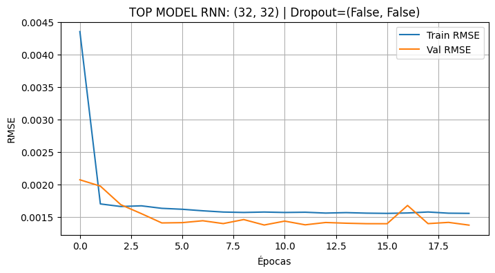
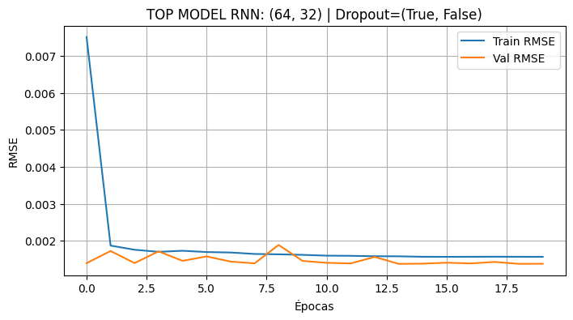
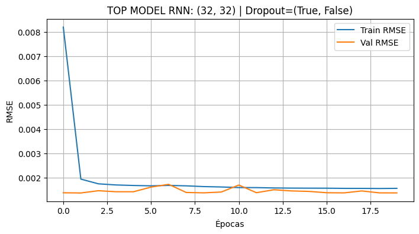
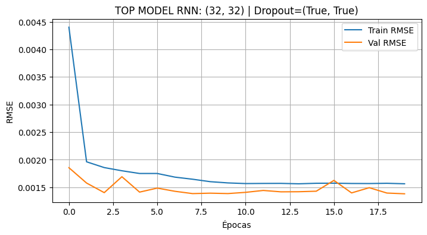
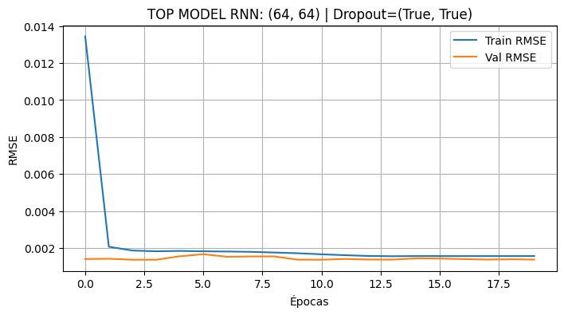
from statsmodels.tsa.stattools import bds
residuals = y_test - y_pred_test
bds_stat, p_value = bds(residuals)
print("\nBDS Test:")
print(f"Statistic: {bds_stat}")
print(f"p-value: {p_value}")
BDS Test:
Statistic: 16.099917361313977
p-value: 2.554455234164932e-58
graficar_predicciones_full(
serie,
y_train, y_val, y_test,
best_model_rnn["y_pred_train"],
best_model_rnn["y_pred_val"],
best_model_rnn["y_pred_test"],
window_size
)
best_arch = best_model_rnn["arquitectura"]
best_dropout = best_model_rnn["dropout_mask"]
modelo_final = construir_modelo_rnn(
arquitectura=best_arch,
dropout_mask=best_dropout,
input_shape=(X_train_rnn.shape[1], X_train_rnn.shape[2])
)
/usr/local/lib/python3.12/dist-packages/keras/src/layers/rnn/rnn.py:199: UserWarning: Do not pass an `input_shape`/`input_dim` argument to a layer. When using Sequential models, prefer using an `Input(shape)` object as the first layer in the model instead.
super().__init__(**kwargs)
modelo_final.fit(
X_train_rnn, y_train,
validation_data=(X_val_rnn, y_val),
epochs=epochs,
batch_size=batch_size,
verbose=1
)
Epoch 1/20
1080/1080 ━━━━━━━━━━━━━━━━━━━━ 11s 7ms/step - loss: 4.6896e-05 - root_mean_squared_error: 0.0068 - val_loss: 2.0578e-06 - val_root_mean_squared_error: 0.0014
Epoch 2/20
1080/1080 ━━━━━━━━━━━━━━━━━━━━ 5s 5ms/step - loss: 2.6965e-06 - root_mean_squared_error: 0.0016 - val_loss: 2.0430e-06 - val_root_mean_squared_error: 0.0014
Epoch 3/20
1080/1080 ━━━━━━━━━━━━━━━━━━━━ 5s 5ms/step - loss: 2.7205e-06 - root_mean_squared_error: 0.0016 - val_loss: 1.9369e-06 - val_root_mean_squared_error: 0.0014
Epoch 4/20
1080/1080 ━━━━━━━━━━━━━━━━━━━━ 6s 5ms/step - loss: 2.7090e-06 - root_mean_squared_error: 0.0016 - val_loss: 2.0202e-06 - val_root_mean_squared_error: 0.0014
Epoch 5/20
1080/1080 ━━━━━━━━━━━━━━━━━━━━ 6s 5ms/step - loss: 2.6066e-06 - root_mean_squared_error: 0.0016 - val_loss: 2.1641e-06 - val_root_mean_squared_error: 0.0015
Epoch 6/20
1080/1080 ━━━━━━━━━━━━━━━━━━━━ 6s 5ms/step - loss: 2.5749e-06 - root_mean_squared_error: 0.0016 - val_loss: 2.2165e-06 - val_root_mean_squared_error: 0.0015
Epoch 7/20
1080/1080 ━━━━━━━━━━━━━━━━━━━━ 5s 5ms/step - loss: 2.4965e-06 - root_mean_squared_error: 0.0016 - val_loss: 1.9825e-06 - val_root_mean_squared_error: 0.0014
Epoch 8/20
1080/1080 ━━━━━━━━━━━━━━━━━━━━ 5s 5ms/step - loss: 2.4816e-06 - root_mean_squared_error: 0.0016 - val_loss: 1.9949e-06 - val_root_mean_squared_error: 0.0014
Epoch 9/20
1080/1080 ━━━━━━━━━━━━━━━━━━━━ 6s 5ms/step - loss: 2.5014e-06 - root_mean_squared_error: 0.0016 - val_loss: 2.1013e-06 - val_root_mean_squared_error: 0.0014
Epoch 10/20
1080/1080 ━━━━━━━━━━━━━━━━━━━━ 5s 5ms/step - loss: 2.4330e-06 - root_mean_squared_error: 0.0016 - val_loss: 2.5164e-06 - val_root_mean_squared_error: 0.0016
Epoch 11/20
1080/1080 ━━━━━━━━━━━━━━━━━━━━ 5s 5ms/step - loss: 2.4788e-06 - root_mean_squared_error: 0.0016 - val_loss: 1.8797e-06 - val_root_mean_squared_error: 0.0014
Epoch 12/20
1080/1080 ━━━━━━━━━━━━━━━━━━━━ 5s 5ms/step - loss: 2.4569e-06 - root_mean_squared_error: 0.0016 - val_loss: 1.8908e-06 - val_root_mean_squared_error: 0.0014
Epoch 13/20
1080/1080 ━━━━━━━━━━━━━━━━━━━━ 5s 5ms/step - loss: 2.4624e-06 - root_mean_squared_error: 0.0016 - val_loss: 1.9033e-06 - val_root_mean_squared_error: 0.0014
Epoch 14/20
1080/1080 ━━━━━━━━━━━━━━━━━━━━ 5s 5ms/step - loss: 2.4368e-06 - root_mean_squared_error: 0.0016 - val_loss: 1.8871e-06 - val_root_mean_squared_error: 0.0014
Epoch 15/20
1080/1080 ━━━━━━━━━━━━━━━━━━━━ 5s 5ms/step - loss: 2.4481e-06 - root_mean_squared_error: 0.0016 - val_loss: 1.9033e-06 - val_root_mean_squared_error: 0.0014
Epoch 16/20
1080/1080 ━━━━━━━━━━━━━━━━━━━━ 5s 5ms/step - loss: 2.4241e-06 - root_mean_squared_error: 0.0016 - val_loss: 2.0349e-06 - val_root_mean_squared_error: 0.0014
Epoch 17/20
1080/1080 ━━━━━━━━━━━━━━━━━━━━ 5s 5ms/step - loss: 2.4367e-06 - root_mean_squared_error: 0.0016 - val_loss: 1.9889e-06 - val_root_mean_squared_error: 0.0014
Epoch 18/20
1080/1080 ━━━━━━━━━━━━━━━━━━━━ 5s 5ms/step - loss: 2.4472e-06 - root_mean_squared_error: 0.0016 - val_loss: 2.0564e-06 - val_root_mean_squared_error: 0.0014
Epoch 19/20
1080/1080 ━━━━━━━━━━━━━━━━━━━━ 5s 5ms/step - loss: 2.4406e-06 - root_mean_squared_error: 0.0016 - val_loss: 1.9041e-06 - val_root_mean_squared_error: 0.0014
Epoch 20/20
1080/1080 ━━━━━━━━━━━━━━━━━━━━ 5s 5ms/step - loss: 2.4486e-06 - root_mean_squared_error: 0.0016 - val_loss: 2.0957e-06 - val_root_mean_squared_error: 0.0014
<keras.src.callbacks.history.History at 0x7d9019305220>
modelo_final.save("mejor_modelo_rnn.keras")
# Guardar modelo
modelo_final.save("mejor_modelo_rnn.h5")
# Descargar
from google.colab import files
files.download("mejor_modelo_rnn.h5")
WARNING:absl:You are saving your model as an HDF5 file via `model.save()` or `keras.saving.save_model(model)`. This file format is considered legacy. We recommend using instead the native Keras format, e.g. `model.save('my_model.keras')` or `keras.saving.save_model(model, 'my_model.keras')`.
Modelo LSTM#
import numpy as np
import pandas as pd
import itertools
import tensorflow as tf
from sklearn.metrics import mean_squared_error, mean_absolute_error, mean_absolute_percentage_error
from statsmodels.stats.diagnostic import acorr_ljungbox
from statsmodels.tsa.stattools import bds
from google.colab import files
# =========================================================
# 0. DATOS YA EXISTENTES
# =========================================================
X_train_lstm = X_train.reshape((X_train.shape[0], X_train.shape[1], 1))
X_val_lstm = X_val.reshape((X_val.shape[0], X_val.shape[1], 1))
X_test_lstm = X_test.reshape((X_test.shape[0], X_test.shape[1], 1))
# =========================================================
# 1. ARQUITECTURAS AJUSTADAS
# =========================================================
neuronas = [32, 64]
max_capas = 2
arquitecturas = []
for num_capas in range(1, max_capas + 1):
for comb in itertools.product(neuronas, repeat=num_capas):
arquitecturas.append(comb)
def dropout_configs(n_capas):
for mask in range(2**n_capas):
yield tuple(bool((mask >> i) & 1) for i in range(n_capas))
# =========================================================
# 2. MODELO LSTM
# =========================================================
def construir_modelo_lstm(arquitectura, dropout_mask, input_shape):
model = tf.keras.Sequential()
for idx, units in enumerate(arquitectura):
return_seq = idx < len(arquitectura) - 1
if idx == 0:
model.add(tf.keras.layers.LSTM(
units,
return_sequences=return_seq,
input_shape=input_shape
))
else:
model.add(tf.keras.layers.LSTM(
units,
return_sequences=return_seq
))
if dropout_mask[idx]:
model.add(tf.keras.layers.Dropout(0.5))
model.add(tf.keras.layers.Dense(1))
model.compile(
optimizer="adam",
loss="mse",
metrics=[tf.keras.metrics.RootMeanSquaredError()]
)
return model
# =========================================================
# 3. FUNCIÓN BDS
# =========================================================
def calcular_bds_completo(residuos):
resultados_bds = {}
residuos_std = (residuos - np.mean(residuos)) / (np.std(residuos) + 1e-8)
if len(residuos_std) < 100 or np.std(residuos_std) < 1e-6:
return None
epsilons = [0.5, 1.0, 1.5]
dimensiones = [2, 3, 4]
for eps_factor in epsilons:
eps = eps_factor * np.std(residuos_std)
for m in dimensiones:
try:
stat, pval = bds(residuos_std, max_dim=m, epsilon=eps)
resultados_bds[f"m{m}_eps{eps_factor}"] = float(pval[-1])
except:
resultados_bds[f"m{m}_eps{eps_factor}"] = np.nan
return resultados_bds
# =========================================================
# 4. LOOP DE ENTRENAMIENTO LSTM
# =========================================================
resultados_lstm = []
epochs = 20
batch_size = 32
early_stop = tf.keras.callbacks.EarlyStopping(
monitor="val_loss",
patience=3,
restore_best_weights=True
)
for arch in arquitecturas:
for dmask in dropout_configs(len(arch)):
print(f"Entrenando LSTM arquitectura={arch}, dropout_mask={dmask}")
model = construir_modelo_lstm(
arquitectura=arch,
dropout_mask=dmask,
input_shape=(X_train_lstm.shape[1], X_train_lstm.shape[2])
)
history = model.fit(
X_train_lstm, y_train,
validation_data=(X_val_lstm, y_val),
epochs=epochs,
batch_size=batch_size,
verbose=0,
callbacks=[early_stop]
)
train_rmse = history.history["root_mean_squared_error"]
val_rmse = history.history["val_root_mean_squared_error"]
best_val = np.min(val_rmse)
last_train = train_rmse[-1]
gap = abs(last_train - best_val)
y_pred_train = model.predict(X_train_lstm, verbose=0).flatten()
y_pred_val = model.predict(X_val_lstm, verbose=0).flatten()
y_pred_test = model.predict(X_test_lstm, verbose=0).flatten()
test_mse = mean_squared_error(y_test, y_pred_test)
test_rmse = np.sqrt(test_mse)
test_mae = mean_absolute_error(y_test, y_pred_test)
mape = mean_absolute_percentage_error(y_test + 1e-8, y_pred_test)
# Si tu target es retorno, esta versión está bien.
directional_acc = np.mean(np.sign(y_test) == np.sign(y_pred_test))
residuos = y_test - y_pred_test
bds_dict = calcular_bds_completo(residuos)
try:
lb = acorr_ljungbox(residuos, lags=[10], return_df=True)
lb_pvalue = lb["lb_pvalue"].values[0]
except:
lb_pvalue = np.nan
resultados_lstm.append({
"modelo": "LSTM",
"arquitectura": arch,
"dropout_mask": dmask,
"best_val_rmse": best_val,
"test_mse": test_mse,
"test_rmse": test_rmse,
"test_mae": test_mae,
"mape": mape,
"directional_acc": directional_acc,
"lb_pvalue": lb_pvalue,
"bds": bds_dict,
"gap": gap,
"train_curve": train_rmse,
"val_curve": val_rmse,
"y_pred_train": y_pred_train,
"y_pred_val": y_pred_val,
"y_pred_test": y_pred_test,
"model_obj": model
})
# =========================================================
# 5. RANKING LSTM
# =========================================================
df_lstm = pd.DataFrame(resultados_lstm)
df_lstm["gap_ratio"] = df_lstm["gap"] / (df_lstm["best_val_rmse"] + 1e-8)
ranking_lstm = df_lstm.sort_values("test_rmse").reset_index(drop=True)
print("\nRanking LSTM (ordenado por TEST RMSE):")
print(ranking_lstm[[
"arquitectura", "dropout_mask", "best_val_rmse",
"test_mse", "test_rmse", "test_mae", "mape",
"directional_acc", "lb_pvalue", "gap_ratio"
]].head(10))
# =========================================================
# 6. SELECCIÓN ROBUSTA
# =========================================================
umbral_gap = 0.2
candidatos_lstm = ranking_lstm[ranking_lstm["gap_ratio"] < umbral_gap]
if candidatos_lstm.empty:
print(f"\nNo hubo modelos con gap_ratio < {umbral_gap}. Se usarán los mejores por test_rmse.")
top5_lstm = ranking_lstm.head(5)
else:
top5_lstm = candidatos_lstm.head(5)
print("\nTop 5 modelos LSTM:")
print(top5_lstm[["arquitectura", "dropout_mask", "test_rmse", "gap_ratio"]])
# =========================================================
# 7. MEJOR MODELO LSTM
# =========================================================
best_model_lstm = top5_lstm.iloc[0]
print("\nMejor modelo LSTM seleccionado:")
print(f"Arquitectura: {best_model_lstm['arquitectura']}")
print(f"Dropout: {best_model_lstm['dropout_mask']}")
print(f"Test MSE: {best_model_lstm['test_mse']:.8f}")
print(f"Test RMSE: {best_model_lstm['test_rmse']:.8f}")
print(f"Test MAE: {best_model_lstm['test_mae']:.8f}")
print(f"MAPE: {best_model_lstm['mape']:.8f}")
print(f"Directional Acc: {best_model_lstm['directional_acc']:.4f}")
print(f"Ljung-Box p-value: {best_model_lstm['lb_pvalue']:.4f}")
print(f"Gap ratio: {best_model_lstm['gap_ratio']:.4f}")
print("\nBDS del mejor modelo LSTM:")
print(best_model_lstm["bds"])
Entrenando LSTM arquitectura=(32,), dropout_mask=(False,)
/usr/local/lib/python3.12/dist-packages/keras/src/layers/rnn/rnn.py:199: UserWarning: Do not pass an `input_shape`/`input_dim` argument to a layer. When using Sequential models, prefer using an `Input(shape)` object as the first layer in the model instead.
super().__init__(**kwargs)
Entrenando LSTM arquitectura=(32,), dropout_mask=(True,)
/usr/local/lib/python3.12/dist-packages/keras/src/layers/rnn/rnn.py:199: UserWarning: Do not pass an `input_shape`/`input_dim` argument to a layer. When using Sequential models, prefer using an `Input(shape)` object as the first layer in the model instead.
super().__init__(**kwargs)
Entrenando LSTM arquitectura=(64,), dropout_mask=(False,)
/usr/local/lib/python3.12/dist-packages/keras/src/layers/rnn/rnn.py:199: UserWarning: Do not pass an `input_shape`/`input_dim` argument to a layer. When using Sequential models, prefer using an `Input(shape)` object as the first layer in the model instead.
super().__init__(**kwargs)
Entrenando LSTM arquitectura=(64,), dropout_mask=(True,)
/usr/local/lib/python3.12/dist-packages/keras/src/layers/rnn/rnn.py:199: UserWarning: Do not pass an `input_shape`/`input_dim` argument to a layer. When using Sequential models, prefer using an `Input(shape)` object as the first layer in the model instead.
super().__init__(**kwargs)
Entrenando LSTM arquitectura=(32, 32), dropout_mask=(False, False)
/usr/local/lib/python3.12/dist-packages/keras/src/layers/rnn/rnn.py:199: UserWarning: Do not pass an `input_shape`/`input_dim` argument to a layer. When using Sequential models, prefer using an `Input(shape)` object as the first layer in the model instead.
super().__init__(**kwargs)
Entrenando LSTM arquitectura=(32, 32), dropout_mask=(True, False)
/usr/local/lib/python3.12/dist-packages/keras/src/layers/rnn/rnn.py:199: UserWarning: Do not pass an `input_shape`/`input_dim` argument to a layer. When using Sequential models, prefer using an `Input(shape)` object as the first layer in the model instead.
super().__init__(**kwargs)
Entrenando LSTM arquitectura=(32, 32), dropout_mask=(False, True)
/usr/local/lib/python3.12/dist-packages/keras/src/layers/rnn/rnn.py:199: UserWarning: Do not pass an `input_shape`/`input_dim` argument to a layer. When using Sequential models, prefer using an `Input(shape)` object as the first layer in the model instead.
super().__init__(**kwargs)
Entrenando LSTM arquitectura=(32, 32), dropout_mask=(True, True)
/usr/local/lib/python3.12/dist-packages/keras/src/layers/rnn/rnn.py:199: UserWarning: Do not pass an `input_shape`/`input_dim` argument to a layer. When using Sequential models, prefer using an `Input(shape)` object as the first layer in the model instead.
super().__init__(**kwargs)
Entrenando LSTM arquitectura=(32, 64), dropout_mask=(False, False)
/usr/local/lib/python3.12/dist-packages/keras/src/layers/rnn/rnn.py:199: UserWarning: Do not pass an `input_shape`/`input_dim` argument to a layer. When using Sequential models, prefer using an `Input(shape)` object as the first layer in the model instead.
super().__init__(**kwargs)
Entrenando LSTM arquitectura=(32, 64), dropout_mask=(True, False)
/usr/local/lib/python3.12/dist-packages/keras/src/layers/rnn/rnn.py:199: UserWarning: Do not pass an `input_shape`/`input_dim` argument to a layer. When using Sequential models, prefer using an `Input(shape)` object as the first layer in the model instead.
super().__init__(**kwargs)
Entrenando LSTM arquitectura=(32, 64), dropout_mask=(False, True)
/usr/local/lib/python3.12/dist-packages/keras/src/layers/rnn/rnn.py:199: UserWarning: Do not pass an `input_shape`/`input_dim` argument to a layer. When using Sequential models, prefer using an `Input(shape)` object as the first layer in the model instead.
super().__init__(**kwargs)
Entrenando LSTM arquitectura=(32, 64), dropout_mask=(True, True)
/usr/local/lib/python3.12/dist-packages/keras/src/layers/rnn/rnn.py:199: UserWarning: Do not pass an `input_shape`/`input_dim` argument to a layer. When using Sequential models, prefer using an `Input(shape)` object as the first layer in the model instead.
super().__init__(**kwargs)
Entrenando LSTM arquitectura=(64, 32), dropout_mask=(False, False)
/usr/local/lib/python3.12/dist-packages/keras/src/layers/rnn/rnn.py:199: UserWarning: Do not pass an `input_shape`/`input_dim` argument to a layer. When using Sequential models, prefer using an `Input(shape)` object as the first layer in the model instead.
super().__init__(**kwargs)
Entrenando LSTM arquitectura=(64, 32), dropout_mask=(True, False)
/usr/local/lib/python3.12/dist-packages/keras/src/layers/rnn/rnn.py:199: UserWarning: Do not pass an `input_shape`/`input_dim` argument to a layer. When using Sequential models, prefer using an `Input(shape)` object as the first layer in the model instead.
super().__init__(**kwargs)
Entrenando LSTM arquitectura=(64, 32), dropout_mask=(False, True)
/usr/local/lib/python3.12/dist-packages/keras/src/layers/rnn/rnn.py:199: UserWarning: Do not pass an `input_shape`/`input_dim` argument to a layer. When using Sequential models, prefer using an `Input(shape)` object as the first layer in the model instead.
super().__init__(**kwargs)
Entrenando LSTM arquitectura=(64, 32), dropout_mask=(True, True)
/usr/local/lib/python3.12/dist-packages/keras/src/layers/rnn/rnn.py:199: UserWarning: Do not pass an `input_shape`/`input_dim` argument to a layer. When using Sequential models, prefer using an `Input(shape)` object as the first layer in the model instead.
super().__init__(**kwargs)
Entrenando LSTM arquitectura=(64, 64), dropout_mask=(False, False)
/usr/local/lib/python3.12/dist-packages/keras/src/layers/rnn/rnn.py:199: UserWarning: Do not pass an `input_shape`/`input_dim` argument to a layer. When using Sequential models, prefer using an `Input(shape)` object as the first layer in the model instead.
super().__init__(**kwargs)
Entrenando LSTM arquitectura=(64, 64), dropout_mask=(True, False)
/usr/local/lib/python3.12/dist-packages/keras/src/layers/rnn/rnn.py:199: UserWarning: Do not pass an `input_shape`/`input_dim` argument to a layer. When using Sequential models, prefer using an `Input(shape)` object as the first layer in the model instead.
super().__init__(**kwargs)
Entrenando LSTM arquitectura=(64, 64), dropout_mask=(False, True)
/usr/local/lib/python3.12/dist-packages/keras/src/layers/rnn/rnn.py:199: UserWarning: Do not pass an `input_shape`/`input_dim` argument to a layer. When using Sequential models, prefer using an `Input(shape)` object as the first layer in the model instead.
super().__init__(**kwargs)
Entrenando LSTM arquitectura=(64, 64), dropout_mask=(True, True)
/usr/local/lib/python3.12/dist-packages/keras/src/layers/rnn/rnn.py:199: UserWarning: Do not pass an `input_shape`/`input_dim` argument to a layer. When using Sequential models, prefer using an `Input(shape)` object as the first layer in the model instead.
super().__init__(**kwargs)
Ranking LSTM (ordenado por TEST RMSE):
arquitectura dropout_mask best_val_rmse test_mse test_rmse test_mae \
0 (32,) (False,) 0.001382 0.000001 0.001048 0.000673
1 (64,) (False,) 0.001381 0.000001 0.001048 0.000675
2 (64,) (True,) 0.001383 0.000001 0.001050 0.000674
3 (64, 32) (True, True) 0.001392 0.000001 0.001055 0.000678
4 (32, 64) (True, False) 0.001393 0.000001 0.001059 0.000681
5 (32, 32) (True, True) 0.001398 0.000001 0.001060 0.000688
6 (64, 64) (True, True) 0.001397 0.000001 0.001067 0.000699
7 (32, 32) (False, True) 0.001416 0.000001 0.001092 0.000730
8 (64, 64) (False, False) 0.001428 0.000001 0.001096 0.000743
9 (32, 32) (True, False) 0.001413 0.000001 0.001101 0.000742
mape directional_acc lb_pvalue gap_ratio
0 29.771091 0.519119 1.181348e-19 0.130712
1 40.422394 0.516011 1.090897e-17 0.133795
2 24.045492 0.520605 2.653539e-22 0.143126
3 30.050457 0.495203 8.377916e-36 0.130917
4 44.728539 0.500743 4.241118e-36 0.138990
5 57.568928 0.495203 4.655127e-36 0.150081
6 78.250740 0.495203 8.521382e-37 0.126675
7 119.639854 0.500743 9.337545e-36 0.117001
8 133.373779 0.495203 1.137632e-36 0.113535
9 132.756805 0.500743 2.432679e-36 0.120439
Top 5 modelos LSTM:
arquitectura dropout_mask test_rmse gap_ratio
0 (32,) (False,) 0.001048 0.130712
1 (64,) (False,) 0.001048 0.133795
2 (64,) (True,) 0.001050 0.143126
3 (64, 32) (True, True) 0.001055 0.130917
4 (32, 64) (True, False) 0.001059 0.138990
Mejor modelo LSTM seleccionado:
Arquitectura: (32,)
Dropout: (False,)
Test MSE: 0.00000110
Test RMSE: 0.00104755
Test MAE: 0.00067330
MAPE: 29.77109146
Directional Acc: 0.5191
Ljung-Box p-value: 0.0000
Gap ratio: 0.1307
BDS del mejor modelo LSTM:
{'m2_eps0.5': nan, 'm3_eps0.5': 1.3539282483733256e-158, 'm4_eps0.5': 9.63909868981444e-219, 'm2_eps1.0': nan, 'm3_eps1.0': 3.778938962792797e-114, 'm4_eps1.0': 1.3066036091978302e-134, 'm2_eps1.5': nan, 'm3_eps1.5': 4.035958285903082e-81, 'm4_eps1.5': 1.3876220146721453e-90}
for i, row in top5_lstm.iterrows():
plt.figure(figsize=(8,4))
plt.plot(row["train_curve"], label="Train RMSE")
plt.plot(row["val_curve"], label="Val RMSE")
plt.title(f"TOP MODEL LSTM: {row['arquitectura']} | Dropout={row['dropout_mask']}")
plt.xlabel("Épocas")
plt.ylabel("RMSE")
plt.legend()
plt.grid()
plt.show()
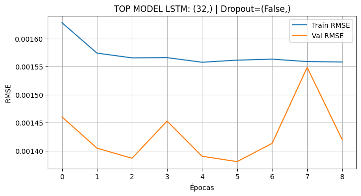
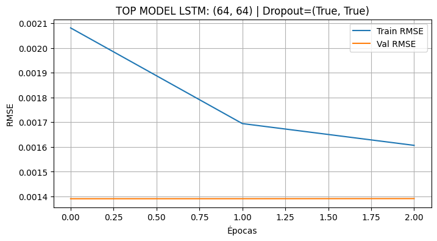
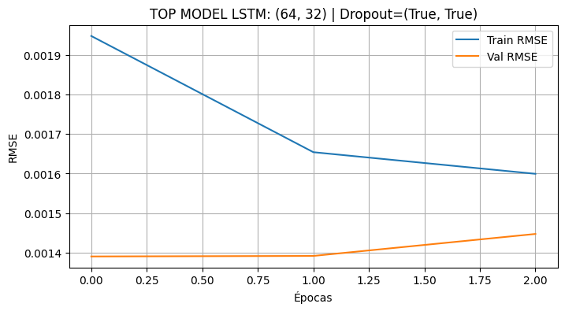
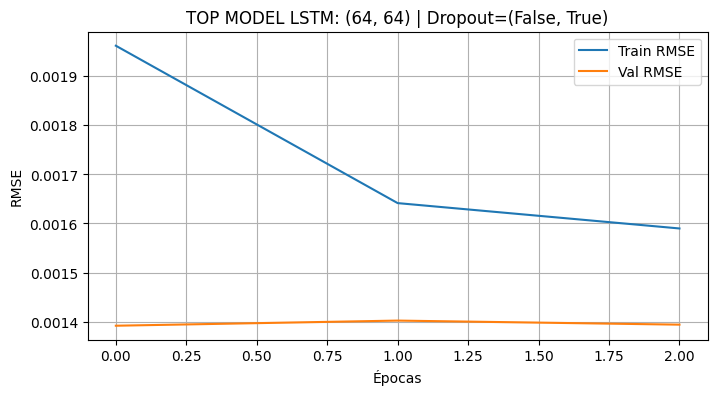
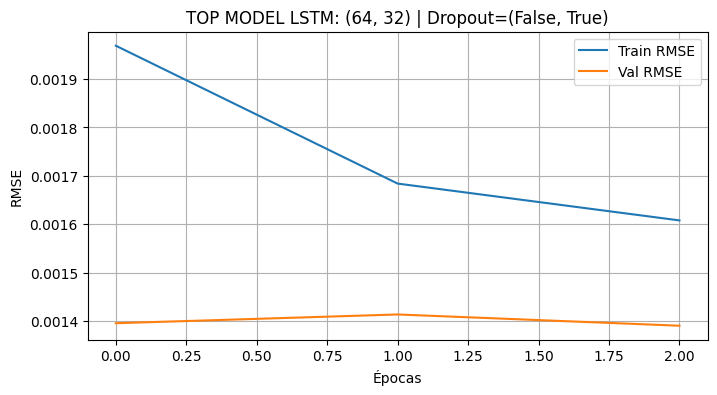
graficar_predicciones_full(
serie,
y_train, y_val, y_test,
best_model_lstm["y_pred_train"],
best_model_lstm["y_pred_val"],
best_model_lstm["y_pred_test"],
window_size
)
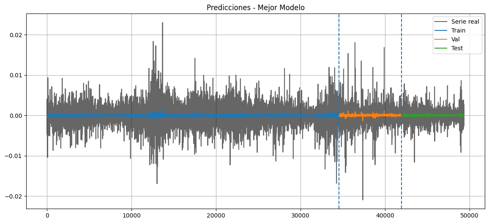
from statsmodels.tsa.stattools import bds
residuals = y_test - y_pred_test
bds_stat, p_value = bds(residuals)
print("\nBDS Test:")
print(f"Statistic: {bds_stat}")
print(f"p-value: {p_value}")
BDS Test:
Statistic: 17.23340041444326
p-value: 1.4912150321497186e-66
# =========================================================
# 8. GUARDAR Y DESCARGAR
# =========================================================
best_model_lstm["model_obj"].save("mejor_modelo_lstm.h5")
best_model_lstm["model_obj"].save("mejor_modelo_lstm.keras")
print("\nModelo LSTM guardado como:")
print("- mejor_modelo_lstm.h5")
print("- mejor_modelo_lstm.keras")
files.download("mejor_modelo_lstm.h5")
WARNING:absl:You are saving your model as an HDF5 file via `model.save()` or `keras.saving.save_model(model)`. This file format is considered legacy. We recommend using instead the native Keras format, e.g. `model.save('my_model.keras')` or `keras.saving.save_model(model, 'my_model.keras')`.
Modelo LSTM guardado como:
- mejor_modelo_lstm.h5
- mejor_modelo_lstm.keras
import numpy as np
import itertools
import tensorflow as tf
import pandas as pd
import kagglehub
import os
import matplotlib.pyplot as plt
from sklearn.model_selection import train_test_split
from sklearn.metrics import mean_squared_error, mean_absolute_percentage_error
from statsmodels.tsa.stattools import bds
from statsmodels.stats.diagnostic import acorr_ljungbox
# =========================
# 1. Datos
# =========================
path = kagglehub.dataset_download("imetomi/eur-usd-forex-pair-historical-data-2002-2019")
for file in os.listdir(path):
print(file)
df = pd.read_csv(os.path.join(path, "eurusd_minute.csv"))
df_time = df.copy()
if 'Date' in df_time.columns and 'Time' in df_time.columns:
df_time['Datetime'] = pd.to_datetime(df_time['Date'] + ' ' + df_time['Time'])
df_time = df_time.set_index('Datetime')
df_time = df_time.drop(columns=['Date', 'Time'])
df_time = df_time.sort_index()
# Re-muestreo a 15 minutos
df_5m = df_time.resample('5min').median().dropna()
df_5m['Retorno'] = df_5m['BC'].pct_change()
df_5m = df_5m.dropna()
df_5m = df_5m.tail(5000)
fechas = df_5m.index
serie = df_5m['Retorno'].values.astype(np.float32)
def crear_dataset(serie, window_size=10):
X, y = [], []
for i in range(len(serie) - window_size):
X.append(serie[i:i+window_size])
y.append(serie[i+window_size])
return np.array(X), np.array(y)
window_size = 10
X, y = crear_dataset(serie, window_size)
X_train, X_temp, y_train, y_temp = train_test_split(X, y, test_size=0.3, shuffle=False)
X_val, X_test, y_val, y_test = train_test_split(X_temp, y_temp, test_size=0.5, shuffle=False)
Warning: Looks like you're using an outdated `kagglehub` version (installed: 0.3.13), please consider upgrading to the latest version (1.0.0).
eurusd_hour.csv
eurusd_minute.csv
eurusd_news.csv
# =========================
# 2. Arquitecturas
# =========================
neuronas = [32, 64, 84, 218]
max_capas = 3
arquitecturas = []
for num_capas in range(1, max_capas+1):
for comb in itertools.product(neuronas, repeat=num_capas):
arquitecturas.append(comb)
def dropout_configs(n_capas):
for mask in range(2**n_capas):
yield tuple(bool((mask >> i) & 1) for i in range(n_capas))
# =========================
# 3. Modelo MLP
# =========================
def construir_modelo(arquitectura, dropout_mask, input_dim):
model = tf.keras.Sequential()
model.add(tf.keras.layers.Input(shape=(input_dim,)))
for idx, units in enumerate(arquitectura):
model.add(tf.keras.layers.Dense(units, activation="tanh"))
if dropout_mask[idx]:
model.add(tf.keras.layers.Dropout(0.5))
model.add(tf.keras.layers.Dense(1))
model.compile(
optimizer="adam",
loss="mse",
metrics=[tf.keras.metrics.RootMeanSquaredError()]
)
return model
# =========================
# 4. Función BDS
# =========================
def calcular_bds_completo(residuos):
resultados_bds = {}
residuos_std = (residuos - np.mean(residuos)) / (np.std(residuos) + 1e-8)
if len(residuos_std) < 100 or np.std(residuos_std) < 1e-6:
return None
epsilons = [0.5, 1.0, 1.5]
dimensiones = [2, 3, 4]
for eps_factor in epsilons:
eps = eps_factor * np.std(residuos_std)
for m in dimensiones:
try:
stat, pval = bds(residuos_std, max_dim=m, epsilon=eps)
resultados_bds[f"m{m}_eps{eps_factor}"] = float(pval[-1])
except:
resultados_bds[f"m{m}_eps{eps_factor}"] = np.nan
return resultados_bds
# =========================
# 5. Entrenamiento loop
# =========================
resultados = []
epochs = 50
for arch in arquitecturas:
for dmask in dropout_configs(len(arch)):
print(f"Entrenando arquitectura={arch}, dropout_mask={dmask}")
model = construir_modelo(arch, dmask, input_dim=window_size)
history = model.fit(
X_train, y_train,
validation_data=(X_val, y_val),
epochs=epochs,
batch_size=32,
verbose=0
)
train_rmse = history.history["root_mean_squared_error"]
val_rmse = history.history["val_root_mean_squared_error"]
best_val = np.min(val_rmse)
last_train = train_rmse[-1]
gap = abs(last_train - best_val)
y_pred_train = model.predict(X_train, verbose=0).flatten()
y_pred_val = model.predict(X_val, verbose=0).flatten()
y_pred_test = model.predict(X_test, verbose=0).flatten()
test_rmse = np.sqrt(mean_squared_error(y_test, y_pred_test))
mape = mean_absolute_percentage_error(y_test + 1e-8, y_pred_test)
residuos = y_test - y_pred_test
bds_dict = calcular_bds_completo(residuos)
try:
lb = acorr_ljungbox(residuos, lags=[10], return_df=True)
lb_pvalue = lb["lb_pvalue"].values[0]
except:
lb_pvalue = np.nan
resultados.append({
"arquitectura": arch,
"dropout_mask": dmask,
"best_val_rmse": best_val,
"test_rmse": test_rmse,
"mape": mape,
"lb_pvalue": lb_pvalue,
"bds": bds_dict,
"gap": gap,
"train_curve": train_rmse,
"val_curve": val_rmse,
"y_pred_train": y_pred_train,
"y_pred_val": y_pred_val,
"y_pred_test": y_pred_test,
"model_obj": model
})
# =========================
# 6. DataFrame y ranking
# =========================
df = pd.DataFrame(resultados)
df["gap_ratio"] = df["gap"] / df["best_val_rmse"]
ranking = df.sort_values("test_rmse").reset_index(drop=True)
metricas_df = ranking[[
"arquitectura",
"dropout_mask",
"best_val_rmse",
"test_rmse",
"mape",
"lb_pvalue",
"gap_ratio"
]]
print("\nRanking completo (ordenado por TEST RMSE):")
print(metricas_df.head(10))
# =========================
# 7. Selección robusta
# =========================
candidatos = ranking[ranking["gap_ratio"] < 0.2]
top5 = candidatos.head(5)
print("\nTop 5 modelos:")
print(top5[["arquitectura","dropout_mask","test_rmse","gap_ratio"]])
# =========================
# 8. Mejor modelo
# =========================
best_model = top5.iloc[0]
print("\nMejor modelo seleccionado:")
print(f"Arquitectura: {best_model['arquitectura']}")
print(f"Dropout: {best_model['dropout_mask']}")
print(f"Test RMSE: {best_model['test_rmse']:.6f}")
print(f"MAPE: {best_model['mape']:.6f}")
print(f"Ljung-Box p-value: {best_model['lb_pvalue']:.4f}")
print(f"Gap ratio: {best_model['gap_ratio']:.4f}")
# =========================
# 9. Curvas de aprendizaje
# =========================
for i, row in top5.iterrows():
plt.figure(figsize=(8,4))
plt.plot(row["train_curve"], label="Train RMSE")
plt.plot(row["val_curve"], label="Val RMSE")
plt.title(f"TOP MODEL: {row['arquitectura']} | Dropout={row['dropout_mask']}")
plt.xlabel("Épocas")
plt.ylabel("RMSE")
plt.legend()
plt.grid()
plt.show()
# =========================
# 10. Predicciones
# =========================
def graficar_predicciones_full(serie, y_train, y_val, y_test,
y_pred_train, y_pred_val, y_pred_test,
window_size):
train_end = len(y_train)
val_end = train_end + len(y_val)
plt.figure(figsize=(14,6))
plt.plot(serie, label="Serie real", color="black", alpha=0.6)
plt.plot(range(window_size, window_size + train_end), y_pred_train, label="Train")
plt.plot(range(window_size + train_end, window_size + val_end), y_pred_val, label="Val")
plt.plot(range(window_size + val_end, window_size + val_end + len(y_test)), y_pred_test, label="Test")
plt.axvline(window_size + train_end, linestyle="--")
plt.axvline(window_size + val_end, linestyle="--")
plt.legend()
plt.title("Predicciones - Mejor Modelo")
plt.grid()
plt.show()
Entrenando arquitectura=(32,), dropout_mask=(False,)
Entrenando arquitectura=(32,), dropout_mask=(True,)
Entrenando arquitectura=(64,), dropout_mask=(False,)
Entrenando arquitectura=(64,), dropout_mask=(True,)
Entrenando arquitectura=(84,), dropout_mask=(False,)
Entrenando arquitectura=(84,), dropout_mask=(True,)
Entrenando arquitectura=(218,), dropout_mask=(False,)
Entrenando arquitectura=(218,), dropout_mask=(True,)
Entrenando arquitectura=(32, 32), dropout_mask=(False, False)
Entrenando arquitectura=(32, 32), dropout_mask=(True, False)
Entrenando arquitectura=(32, 32), dropout_mask=(False, True)
Entrenando arquitectura=(32, 32), dropout_mask=(True, True)
Entrenando arquitectura=(32, 64), dropout_mask=(False, False)
Entrenando arquitectura=(32, 64), dropout_mask=(True, False)
Entrenando arquitectura=(32, 64), dropout_mask=(False, True)
Entrenando arquitectura=(32, 64), dropout_mask=(True, True)
Entrenando arquitectura=(32, 84), dropout_mask=(False, False)
Entrenando arquitectura=(32, 84), dropout_mask=(True, False)
Entrenando arquitectura=(32, 84), dropout_mask=(False, True)
Entrenando arquitectura=(32, 84), dropout_mask=(True, True)
Entrenando arquitectura=(32, 218), dropout_mask=(False, False)
Entrenando arquitectura=(32, 218), dropout_mask=(True, False)
Entrenando arquitectura=(32, 218), dropout_mask=(False, True)
Entrenando arquitectura=(32, 218), dropout_mask=(True, True)
Entrenando arquitectura=(64, 32), dropout_mask=(False, False)
Entrenando arquitectura=(64, 32), dropout_mask=(True, False)
Entrenando arquitectura=(64, 32), dropout_mask=(False, True)
Entrenando arquitectura=(64, 32), dropout_mask=(True, True)
Entrenando arquitectura=(64, 64), dropout_mask=(False, False)
Entrenando arquitectura=(64, 64), dropout_mask=(True, False)
Entrenando arquitectura=(64, 64), dropout_mask=(False, True)
Entrenando arquitectura=(64, 64), dropout_mask=(True, True)
Entrenando arquitectura=(64, 84), dropout_mask=(False, False)
Entrenando arquitectura=(64, 84), dropout_mask=(True, False)
Entrenando arquitectura=(64, 84), dropout_mask=(False, True)
Entrenando arquitectura=(64, 84), dropout_mask=(True, True)
Entrenando arquitectura=(64, 218), dropout_mask=(False, False)
Entrenando arquitectura=(64, 218), dropout_mask=(True, False)
Entrenando arquitectura=(64, 218), dropout_mask=(False, True)
Entrenando arquitectura=(64, 218), dropout_mask=(True, True)
Entrenando arquitectura=(84, 32), dropout_mask=(False, False)
Entrenando arquitectura=(84, 32), dropout_mask=(True, False)
Entrenando arquitectura=(84, 32), dropout_mask=(False, True)
Entrenando arquitectura=(84, 32), dropout_mask=(True, True)
Entrenando arquitectura=(84, 64), dropout_mask=(False, False)
Entrenando arquitectura=(84, 64), dropout_mask=(True, False)
Entrenando arquitectura=(84, 64), dropout_mask=(False, True)
Entrenando arquitectura=(84, 64), dropout_mask=(True, True)
Entrenando arquitectura=(84, 84), dropout_mask=(False, False)
Entrenando arquitectura=(84, 84), dropout_mask=(True, False)
Entrenando arquitectura=(84, 84), dropout_mask=(False, True)
Entrenando arquitectura=(84, 84), dropout_mask=(True, True)
Entrenando arquitectura=(84, 218), dropout_mask=(False, False)
Entrenando arquitectura=(84, 218), dropout_mask=(True, False)
Entrenando arquitectura=(84, 218), dropout_mask=(False, True)
Entrenando arquitectura=(84, 218), dropout_mask=(True, True)
Entrenando arquitectura=(218, 32), dropout_mask=(False, False)
Entrenando arquitectura=(218, 32), dropout_mask=(True, False)
Entrenando arquitectura=(218, 32), dropout_mask=(False, True)
Entrenando arquitectura=(218, 32), dropout_mask=(True, True)
Entrenando arquitectura=(218, 64), dropout_mask=(False, False)
Entrenando arquitectura=(218, 64), dropout_mask=(True, False)
Entrenando arquitectura=(218, 64), dropout_mask=(False, True)
Entrenando arquitectura=(218, 64), dropout_mask=(True, True)
Entrenando arquitectura=(218, 84), dropout_mask=(False, False)
Entrenando arquitectura=(218, 84), dropout_mask=(True, False)
Entrenando arquitectura=(218, 84), dropout_mask=(False, True)
Entrenando arquitectura=(218, 84), dropout_mask=(True, True)
Entrenando arquitectura=(218, 218), dropout_mask=(False, False)
Entrenando arquitectura=(218, 218), dropout_mask=(True, False)
Entrenando arquitectura=(218, 218), dropout_mask=(False, True)
Entrenando arquitectura=(218, 218), dropout_mask=(True, True)
Entrenando arquitectura=(32, 32, 32), dropout_mask=(False, False, False)
Entrenando arquitectura=(32, 32, 32), dropout_mask=(True, False, False)
Entrenando arquitectura=(32, 32, 32), dropout_mask=(False, True, False)
Entrenando arquitectura=(32, 32, 32), dropout_mask=(True, True, False)
Entrenando arquitectura=(32, 32, 32), dropout_mask=(False, False, True)
Entrenando arquitectura=(32, 32, 32), dropout_mask=(True, False, True)
Entrenando arquitectura=(32, 32, 32), dropout_mask=(False, True, True)
Entrenando arquitectura=(32, 32, 32), dropout_mask=(True, True, True)
Entrenando arquitectura=(32, 32, 64), dropout_mask=(False, False, False)
Entrenando arquitectura=(32, 32, 64), dropout_mask=(True, False, False)
Entrenando arquitectura=(32, 32, 64), dropout_mask=(False, True, False)
Entrenando arquitectura=(32, 32, 64), dropout_mask=(True, True, False)
Entrenando arquitectura=(32, 32, 64), dropout_mask=(False, False, True)
Entrenando arquitectura=(32, 32, 64), dropout_mask=(True, False, True)
Entrenando arquitectura=(32, 32, 64), dropout_mask=(False, True, True)
Entrenando arquitectura=(32, 32, 64), dropout_mask=(True, True, True)
Entrenando arquitectura=(32, 32, 84), dropout_mask=(False, False, False)
Entrenando arquitectura=(32, 32, 84), dropout_mask=(True, False, False)
Entrenando arquitectura=(32, 32, 84), dropout_mask=(False, True, False)
Entrenando arquitectura=(32, 32, 84), dropout_mask=(True, True, False)
Entrenando arquitectura=(32, 32, 84), dropout_mask=(False, False, True)
Entrenando arquitectura=(32, 32, 84), dropout_mask=(True, False, True)
Entrenando arquitectura=(32, 32, 84), dropout_mask=(False, True, True)
Entrenando arquitectura=(32, 32, 84), dropout_mask=(True, True, True)
Entrenando arquitectura=(32, 32, 218), dropout_mask=(False, False, False)
Entrenando arquitectura=(32, 32, 218), dropout_mask=(True, False, False)
Entrenando arquitectura=(32, 32, 218), dropout_mask=(False, True, False)
Entrenando arquitectura=(32, 32, 218), dropout_mask=(True, True, False)
Entrenando arquitectura=(32, 32, 218), dropout_mask=(False, False, True)
Entrenando arquitectura=(32, 32, 218), dropout_mask=(True, False, True)
Entrenando arquitectura=(32, 32, 218), dropout_mask=(False, True, True)
Entrenando arquitectura=(32, 32, 218), dropout_mask=(True, True, True)
Entrenando arquitectura=(32, 64, 32), dropout_mask=(False, False, False)
Entrenando arquitectura=(32, 64, 32), dropout_mask=(True, False, False)
Entrenando arquitectura=(32, 64, 32), dropout_mask=(False, True, False)
Entrenando arquitectura=(32, 64, 32), dropout_mask=(True, True, False)
Entrenando arquitectura=(32, 64, 32), dropout_mask=(False, False, True)
Entrenando arquitectura=(32, 64, 32), dropout_mask=(True, False, True)
Entrenando arquitectura=(32, 64, 32), dropout_mask=(False, True, True)
Entrenando arquitectura=(32, 64, 32), dropout_mask=(True, True, True)
Entrenando arquitectura=(32, 64, 64), dropout_mask=(False, False, False)
Entrenando arquitectura=(32, 64, 64), dropout_mask=(True, False, False)
Entrenando arquitectura=(32, 64, 64), dropout_mask=(False, True, False)
Entrenando arquitectura=(32, 64, 64), dropout_mask=(True, True, False)
Entrenando arquitectura=(32, 64, 64), dropout_mask=(False, False, True)
Entrenando arquitectura=(32, 64, 64), dropout_mask=(True, False, True)
Entrenando arquitectura=(32, 64, 64), dropout_mask=(False, True, True)
Entrenando arquitectura=(32, 64, 64), dropout_mask=(True, True, True)
Entrenando arquitectura=(32, 64, 84), dropout_mask=(False, False, False)
Entrenando arquitectura=(32, 64, 84), dropout_mask=(True, False, False)
Entrenando arquitectura=(32, 64, 84), dropout_mask=(False, True, False)
Entrenando arquitectura=(32, 64, 84), dropout_mask=(True, True, False)
Entrenando arquitectura=(32, 64, 84), dropout_mask=(False, False, True)
Entrenando arquitectura=(32, 64, 84), dropout_mask=(True, False, True)
Entrenando arquitectura=(32, 64, 84), dropout_mask=(False, True, True)
Entrenando arquitectura=(32, 64, 84), dropout_mask=(True, True, True)
Entrenando arquitectura=(32, 64, 218), dropout_mask=(False, False, False)
Entrenando arquitectura=(32, 64, 218), dropout_mask=(True, False, False)
Entrenando arquitectura=(32, 64, 218), dropout_mask=(False, True, False)
Entrenando arquitectura=(32, 64, 218), dropout_mask=(True, True, False)
Entrenando arquitectura=(32, 64, 218), dropout_mask=(False, False, True)
Entrenando arquitectura=(32, 64, 218), dropout_mask=(True, False, True)
Entrenando arquitectura=(32, 64, 218), dropout_mask=(False, True, True)
Entrenando arquitectura=(32, 64, 218), dropout_mask=(True, True, True)
Entrenando arquitectura=(32, 84, 32), dropout_mask=(False, False, False)
Entrenando arquitectura=(32, 84, 32), dropout_mask=(True, False, False)
Entrenando arquitectura=(32, 84, 32), dropout_mask=(False, True, False)
Entrenando arquitectura=(32, 84, 32), dropout_mask=(True, True, False)
Entrenando arquitectura=(32, 84, 32), dropout_mask=(False, False, True)
Entrenando arquitectura=(32, 84, 32), dropout_mask=(True, False, True)
Entrenando arquitectura=(32, 84, 32), dropout_mask=(False, True, True)
Entrenando arquitectura=(32, 84, 32), dropout_mask=(True, True, True)
Entrenando arquitectura=(32, 84, 64), dropout_mask=(False, False, False)
Entrenando arquitectura=(32, 84, 64), dropout_mask=(True, False, False)
Entrenando arquitectura=(32, 84, 64), dropout_mask=(False, True, False)
Entrenando arquitectura=(32, 84, 64), dropout_mask=(True, True, False)
Entrenando arquitectura=(32, 84, 64), dropout_mask=(False, False, True)
Entrenando arquitectura=(32, 84, 64), dropout_mask=(True, False, True)
Entrenando arquitectura=(32, 84, 64), dropout_mask=(False, True, True)
Entrenando arquitectura=(32, 84, 64), dropout_mask=(True, True, True)
Entrenando arquitectura=(32, 84, 84), dropout_mask=(False, False, False)
Entrenando arquitectura=(32, 84, 84), dropout_mask=(True, False, False)
Entrenando arquitectura=(32, 84, 84), dropout_mask=(False, True, False)
Entrenando arquitectura=(32, 84, 84), dropout_mask=(True, True, False)
Entrenando arquitectura=(32, 84, 84), dropout_mask=(False, False, True)
Entrenando arquitectura=(32, 84, 84), dropout_mask=(True, False, True)
Entrenando arquitectura=(32, 84, 84), dropout_mask=(False, True, True)
Entrenando arquitectura=(32, 84, 84), dropout_mask=(True, True, True)
Entrenando arquitectura=(32, 84, 218), dropout_mask=(False, False, False)
Entrenando arquitectura=(32, 84, 218), dropout_mask=(True, False, False)
Entrenando arquitectura=(32, 84, 218), dropout_mask=(False, True, False)
Entrenando arquitectura=(32, 84, 218), dropout_mask=(True, True, False)
Entrenando arquitectura=(32, 84, 218), dropout_mask=(False, False, True)
Entrenando arquitectura=(32, 84, 218), dropout_mask=(True, False, True)
Entrenando arquitectura=(32, 84, 218), dropout_mask=(False, True, True)
Entrenando arquitectura=(32, 84, 218), dropout_mask=(True, True, True)
Entrenando arquitectura=(32, 218, 32), dropout_mask=(False, False, False)
Entrenando arquitectura=(32, 218, 32), dropout_mask=(True, False, False)
Entrenando arquitectura=(32, 218, 32), dropout_mask=(False, True, False)
Entrenando arquitectura=(32, 218, 32), dropout_mask=(True, True, False)
Entrenando arquitectura=(32, 218, 32), dropout_mask=(False, False, True)
Entrenando arquitectura=(32, 218, 32), dropout_mask=(True, False, True)
Entrenando arquitectura=(32, 218, 32), dropout_mask=(False, True, True)
Entrenando arquitectura=(32, 218, 32), dropout_mask=(True, True, True)
Entrenando arquitectura=(32, 218, 64), dropout_mask=(False, False, False)
Entrenando arquitectura=(32, 218, 64), dropout_mask=(True, False, False)
Entrenando arquitectura=(32, 218, 64), dropout_mask=(False, True, False)
Entrenando arquitectura=(32, 218, 64), dropout_mask=(True, True, False)
Entrenando arquitectura=(32, 218, 64), dropout_mask=(False, False, True)
Entrenando arquitectura=(32, 218, 64), dropout_mask=(True, False, True)
Entrenando arquitectura=(32, 218, 64), dropout_mask=(False, True, True)
Entrenando arquitectura=(32, 218, 64), dropout_mask=(True, True, True)
Entrenando arquitectura=(32, 218, 84), dropout_mask=(False, False, False)
Entrenando arquitectura=(32, 218, 84), dropout_mask=(True, False, False)
Entrenando arquitectura=(32, 218, 84), dropout_mask=(False, True, False)
Entrenando arquitectura=(32, 218, 84), dropout_mask=(True, True, False)
Entrenando arquitectura=(32, 218, 84), dropout_mask=(False, False, True)
Entrenando arquitectura=(32, 218, 84), dropout_mask=(True, False, True)
Entrenando arquitectura=(32, 218, 84), dropout_mask=(False, True, True)
Entrenando arquitectura=(32, 218, 84), dropout_mask=(True, True, True)
Entrenando arquitectura=(32, 218, 218), dropout_mask=(False, False, False)
Entrenando arquitectura=(32, 218, 218), dropout_mask=(True, False, False)
Entrenando arquitectura=(32, 218, 218), dropout_mask=(False, True, False)
Entrenando arquitectura=(32, 218, 218), dropout_mask=(True, True, False)
Entrenando arquitectura=(32, 218, 218), dropout_mask=(False, False, True)
Entrenando arquitectura=(32, 218, 218), dropout_mask=(True, False, True)
Entrenando arquitectura=(32, 218, 218), dropout_mask=(False, True, True)
Entrenando arquitectura=(32, 218, 218), dropout_mask=(True, True, True)
Entrenando arquitectura=(64, 32, 32), dropout_mask=(False, False, False)
Entrenando arquitectura=(64, 32, 32), dropout_mask=(True, False, False)
Entrenando arquitectura=(64, 32, 32), dropout_mask=(False, True, False)
Entrenando arquitectura=(64, 32, 32), dropout_mask=(True, True, False)
Entrenando arquitectura=(64, 32, 32), dropout_mask=(False, False, True)
Entrenando arquitectura=(64, 32, 32), dropout_mask=(True, False, True)
Entrenando arquitectura=(64, 32, 32), dropout_mask=(False, True, True)
Entrenando arquitectura=(64, 32, 32), dropout_mask=(True, True, True)
Entrenando arquitectura=(64, 32, 64), dropout_mask=(False, False, False)
Entrenando arquitectura=(64, 32, 64), dropout_mask=(True, False, False)
Entrenando arquitectura=(64, 32, 64), dropout_mask=(False, True, False)
Entrenando arquitectura=(64, 32, 64), dropout_mask=(True, True, False)
Entrenando arquitectura=(64, 32, 64), dropout_mask=(False, False, True)
Entrenando arquitectura=(64, 32, 64), dropout_mask=(True, False, True)
Entrenando arquitectura=(64, 32, 64), dropout_mask=(False, True, True)
Entrenando arquitectura=(64, 32, 64), dropout_mask=(True, True, True)
Entrenando arquitectura=(64, 32, 84), dropout_mask=(False, False, False)
Entrenando arquitectura=(64, 32, 84), dropout_mask=(True, False, False)
Entrenando arquitectura=(64, 32, 84), dropout_mask=(False, True, False)
Entrenando arquitectura=(64, 32, 84), dropout_mask=(True, True, False)
Entrenando arquitectura=(64, 32, 84), dropout_mask=(False, False, True)
Entrenando arquitectura=(64, 32, 84), dropout_mask=(True, False, True)
Entrenando arquitectura=(64, 32, 84), dropout_mask=(False, True, True)
Entrenando arquitectura=(64, 32, 84), dropout_mask=(True, True, True)
Entrenando arquitectura=(64, 32, 218), dropout_mask=(False, False, False)
Entrenando arquitectura=(64, 32, 218), dropout_mask=(True, False, False)
Entrenando arquitectura=(64, 32, 218), dropout_mask=(False, True, False)
Entrenando arquitectura=(64, 32, 218), dropout_mask=(True, True, False)
Entrenando arquitectura=(64, 32, 218), dropout_mask=(False, False, True)
Entrenando arquitectura=(64, 32, 218), dropout_mask=(True, False, True)
Entrenando arquitectura=(64, 32, 218), dropout_mask=(False, True, True)
Entrenando arquitectura=(64, 32, 218), dropout_mask=(True, True, True)
Entrenando arquitectura=(64, 64, 32), dropout_mask=(False, False, False)
Entrenando arquitectura=(64, 64, 32), dropout_mask=(True, False, False)
Entrenando arquitectura=(64, 64, 32), dropout_mask=(False, True, False)
Entrenando arquitectura=(64, 64, 32), dropout_mask=(True, True, False)
Entrenando arquitectura=(64, 64, 32), dropout_mask=(False, False, True)
Entrenando arquitectura=(64, 64, 32), dropout_mask=(True, False, True)
Entrenando arquitectura=(64, 64, 32), dropout_mask=(False, True, True)
Entrenando arquitectura=(64, 64, 32), dropout_mask=(True, True, True)
Entrenando arquitectura=(64, 64, 64), dropout_mask=(False, False, False)
Entrenando arquitectura=(64, 64, 64), dropout_mask=(True, False, False)
Entrenando arquitectura=(64, 64, 64), dropout_mask=(False, True, False)
Entrenando arquitectura=(64, 64, 64), dropout_mask=(True, True, False)
Entrenando arquitectura=(64, 64, 64), dropout_mask=(False, False, True)
Entrenando arquitectura=(64, 64, 64), dropout_mask=(True, False, True)
Entrenando arquitectura=(64, 64, 64), dropout_mask=(False, True, True)
Entrenando arquitectura=(64, 64, 64), dropout_mask=(True, True, True)
Entrenando arquitectura=(64, 64, 84), dropout_mask=(False, False, False)
Entrenando arquitectura=(64, 64, 84), dropout_mask=(True, False, False)
Entrenando arquitectura=(64, 64, 84), dropout_mask=(False, True, False)
Entrenando arquitectura=(64, 64, 84), dropout_mask=(True, True, False)
Entrenando arquitectura=(64, 64, 84), dropout_mask=(False, False, True)
Entrenando arquitectura=(64, 64, 84), dropout_mask=(True, False, True)
Entrenando arquitectura=(64, 64, 84), dropout_mask=(False, True, True)
Entrenando arquitectura=(64, 64, 84), dropout_mask=(True, True, True)
Entrenando arquitectura=(64, 64, 218), dropout_mask=(False, False, False)
Entrenando arquitectura=(64, 64, 218), dropout_mask=(True, False, False)
Entrenando arquitectura=(64, 64, 218), dropout_mask=(False, True, False)
Entrenando arquitectura=(64, 64, 218), dropout_mask=(True, True, False)
Entrenando arquitectura=(64, 64, 218), dropout_mask=(False, False, True)
Entrenando arquitectura=(64, 64, 218), dropout_mask=(True, False, True)
Entrenando arquitectura=(64, 64, 218), dropout_mask=(False, True, True)
Entrenando arquitectura=(64, 64, 218), dropout_mask=(True, True, True)
Entrenando arquitectura=(64, 84, 32), dropout_mask=(False, False, False)
Entrenando arquitectura=(64, 84, 32), dropout_mask=(True, False, False)
Entrenando arquitectura=(64, 84, 32), dropout_mask=(False, True, False)
Entrenando arquitectura=(64, 84, 32), dropout_mask=(True, True, False)
Entrenando arquitectura=(64, 84, 32), dropout_mask=(False, False, True)
Entrenando arquitectura=(64, 84, 32), dropout_mask=(True, False, True)
Entrenando arquitectura=(64, 84, 32), dropout_mask=(False, True, True)
Entrenando arquitectura=(64, 84, 32), dropout_mask=(True, True, True)
Entrenando arquitectura=(64, 84, 64), dropout_mask=(False, False, False)
Entrenando arquitectura=(64, 84, 64), dropout_mask=(True, False, False)
Entrenando arquitectura=(64, 84, 64), dropout_mask=(False, True, False)
Entrenando arquitectura=(64, 84, 64), dropout_mask=(True, True, False)
Entrenando arquitectura=(64, 84, 64), dropout_mask=(False, False, True)
Entrenando arquitectura=(64, 84, 64), dropout_mask=(True, False, True)
Entrenando arquitectura=(64, 84, 64), dropout_mask=(False, True, True)
Entrenando arquitectura=(64, 84, 64), dropout_mask=(True, True, True)
Entrenando arquitectura=(64, 84, 84), dropout_mask=(False, False, False)
Entrenando arquitectura=(64, 84, 84), dropout_mask=(True, False, False)
Entrenando arquitectura=(64, 84, 84), dropout_mask=(False, True, False)
Entrenando arquitectura=(64, 84, 84), dropout_mask=(True, True, False)
Entrenando arquitectura=(64, 84, 84), dropout_mask=(False, False, True)
Entrenando arquitectura=(64, 84, 84), dropout_mask=(True, False, True)
Entrenando arquitectura=(64, 84, 84), dropout_mask=(False, True, True)
Entrenando arquitectura=(64, 84, 84), dropout_mask=(True, True, True)
Entrenando arquitectura=(64, 84, 218), dropout_mask=(False, False, False)
Entrenando arquitectura=(64, 84, 218), dropout_mask=(True, False, False)
Entrenando arquitectura=(64, 84, 218), dropout_mask=(False, True, False)
Entrenando arquitectura=(64, 84, 218), dropout_mask=(True, True, False)
Entrenando arquitectura=(64, 84, 218), dropout_mask=(False, False, True)
Entrenando arquitectura=(64, 84, 218), dropout_mask=(True, False, True)
Entrenando arquitectura=(64, 84, 218), dropout_mask=(False, True, True)
Entrenando arquitectura=(64, 84, 218), dropout_mask=(True, True, True)
Entrenando arquitectura=(64, 218, 32), dropout_mask=(False, False, False)
Entrenando arquitectura=(64, 218, 32), dropout_mask=(True, False, False)
Entrenando arquitectura=(64, 218, 32), dropout_mask=(False, True, False)
Entrenando arquitectura=(64, 218, 32), dropout_mask=(True, True, False)
Entrenando arquitectura=(64, 218, 32), dropout_mask=(False, False, True)
Entrenando arquitectura=(64, 218, 32), dropout_mask=(True, False, True)
Entrenando arquitectura=(64, 218, 32), dropout_mask=(False, True, True)
Entrenando arquitectura=(64, 218, 32), dropout_mask=(True, True, True)
Entrenando arquitectura=(64, 218, 64), dropout_mask=(False, False, False)
Entrenando arquitectura=(64, 218, 64), dropout_mask=(True, False, False)
Entrenando arquitectura=(64, 218, 64), dropout_mask=(False, True, False)
Entrenando arquitectura=(64, 218, 64), dropout_mask=(True, True, False)
Entrenando arquitectura=(64, 218, 64), dropout_mask=(False, False, True)
Entrenando arquitectura=(64, 218, 64), dropout_mask=(True, False, True)
Entrenando arquitectura=(64, 218, 64), dropout_mask=(False, True, True)
Entrenando arquitectura=(64, 218, 64), dropout_mask=(True, True, True)
Entrenando arquitectura=(64, 218, 84), dropout_mask=(False, False, False)
Entrenando arquitectura=(64, 218, 84), dropout_mask=(True, False, False)
Entrenando arquitectura=(64, 218, 84), dropout_mask=(False, True, False)
Entrenando arquitectura=(64, 218, 84), dropout_mask=(True, True, False)
Entrenando arquitectura=(64, 218, 84), dropout_mask=(False, False, True)
Entrenando arquitectura=(64, 218, 84), dropout_mask=(True, False, True)
Entrenando arquitectura=(64, 218, 84), dropout_mask=(False, True, True)
Entrenando arquitectura=(64, 218, 84), dropout_mask=(True, True, True)
Entrenando arquitectura=(64, 218, 218), dropout_mask=(False, False, False)
Entrenando arquitectura=(64, 218, 218), dropout_mask=(True, False, False)
Entrenando arquitectura=(64, 218, 218), dropout_mask=(False, True, False)
Entrenando arquitectura=(64, 218, 218), dropout_mask=(True, True, False)
Entrenando arquitectura=(64, 218, 218), dropout_mask=(False, False, True)
Entrenando arquitectura=(64, 218, 218), dropout_mask=(True, False, True)
Entrenando arquitectura=(64, 218, 218), dropout_mask=(False, True, True)
Entrenando arquitectura=(64, 218, 218), dropout_mask=(True, True, True)
Entrenando arquitectura=(84, 32, 32), dropout_mask=(False, False, False)
Entrenando arquitectura=(84, 32, 32), dropout_mask=(True, False, False)
Entrenando arquitectura=(84, 32, 32), dropout_mask=(False, True, False)
Entrenando arquitectura=(84, 32, 32), dropout_mask=(True, True, False)
Entrenando arquitectura=(84, 32, 32), dropout_mask=(False, False, True)
Entrenando arquitectura=(84, 32, 32), dropout_mask=(True, False, True)
Entrenando arquitectura=(84, 32, 32), dropout_mask=(False, True, True)
Entrenando arquitectura=(84, 32, 32), dropout_mask=(True, True, True)
Entrenando arquitectura=(84, 32, 64), dropout_mask=(False, False, False)
Entrenando arquitectura=(84, 32, 64), dropout_mask=(True, False, False)
Entrenando arquitectura=(84, 32, 64), dropout_mask=(False, True, False)
Entrenando arquitectura=(84, 32, 64), dropout_mask=(True, True, False)
Entrenando arquitectura=(84, 32, 64), dropout_mask=(False, False, True)
Entrenando arquitectura=(84, 32, 64), dropout_mask=(True, False, True)
Entrenando arquitectura=(84, 32, 64), dropout_mask=(False, True, True)
Entrenando arquitectura=(84, 32, 64), dropout_mask=(True, True, True)
Entrenando arquitectura=(84, 32, 84), dropout_mask=(False, False, False)
Entrenando arquitectura=(84, 32, 84), dropout_mask=(True, False, False)
Entrenando arquitectura=(84, 32, 84), dropout_mask=(False, True, False)
Entrenando arquitectura=(84, 32, 84), dropout_mask=(True, True, False)
Entrenando arquitectura=(84, 32, 84), dropout_mask=(False, False, True)
Entrenando arquitectura=(84, 32, 84), dropout_mask=(True, False, True)
Entrenando arquitectura=(84, 32, 84), dropout_mask=(False, True, True)
Entrenando arquitectura=(84, 32, 84), dropout_mask=(True, True, True)
Entrenando arquitectura=(84, 32, 218), dropout_mask=(False, False, False)
Entrenando arquitectura=(84, 32, 218), dropout_mask=(True, False, False)
Entrenando arquitectura=(84, 32, 218), dropout_mask=(False, True, False)
Entrenando arquitectura=(84, 32, 218), dropout_mask=(True, True, False)
Entrenando arquitectura=(84, 32, 218), dropout_mask=(False, False, True)
Entrenando arquitectura=(84, 32, 218), dropout_mask=(True, False, True)
Entrenando arquitectura=(84, 32, 218), dropout_mask=(False, True, True)
Entrenando arquitectura=(84, 32, 218), dropout_mask=(True, True, True)
Entrenando arquitectura=(84, 64, 32), dropout_mask=(False, False, False)
Entrenando arquitectura=(84, 64, 32), dropout_mask=(True, False, False)
Entrenando arquitectura=(84, 64, 32), dropout_mask=(False, True, False)
Entrenando arquitectura=(84, 64, 32), dropout_mask=(True, True, False)
Entrenando arquitectura=(84, 64, 32), dropout_mask=(False, False, True)
Entrenando arquitectura=(84, 64, 32), dropout_mask=(True, False, True)
Entrenando arquitectura=(84, 64, 32), dropout_mask=(False, True, True)
Entrenando arquitectura=(84, 64, 32), dropout_mask=(True, True, True)
Entrenando arquitectura=(84, 64, 64), dropout_mask=(False, False, False)
Entrenando arquitectura=(84, 64, 64), dropout_mask=(True, False, False)
Entrenando arquitectura=(84, 64, 64), dropout_mask=(False, True, False)
Entrenando arquitectura=(84, 64, 64), dropout_mask=(True, True, False)
Entrenando arquitectura=(84, 64, 64), dropout_mask=(False, False, True)
Entrenando arquitectura=(84, 64, 64), dropout_mask=(True, False, True)
Entrenando arquitectura=(84, 64, 64), dropout_mask=(False, True, True)
Entrenando arquitectura=(84, 64, 64), dropout_mask=(True, True, True)
Entrenando arquitectura=(84, 64, 84), dropout_mask=(False, False, False)
Entrenando arquitectura=(84, 64, 84), dropout_mask=(True, False, False)
Entrenando arquitectura=(84, 64, 84), dropout_mask=(False, True, False)
Entrenando arquitectura=(84, 64, 84), dropout_mask=(True, True, False)
Entrenando arquitectura=(84, 64, 84), dropout_mask=(False, False, True)
Entrenando arquitectura=(84, 64, 84), dropout_mask=(True, False, True)
Entrenando arquitectura=(84, 64, 84), dropout_mask=(False, True, True)
Entrenando arquitectura=(84, 64, 84), dropout_mask=(True, True, True)
Entrenando arquitectura=(84, 64, 218), dropout_mask=(False, False, False)
Entrenando arquitectura=(84, 64, 218), dropout_mask=(True, False, False)
Entrenando arquitectura=(84, 64, 218), dropout_mask=(False, True, False)
Entrenando arquitectura=(84, 64, 218), dropout_mask=(True, True, False)
Entrenando arquitectura=(84, 64, 218), dropout_mask=(False, False, True)
Entrenando arquitectura=(84, 64, 218), dropout_mask=(True, False, True)
Entrenando arquitectura=(84, 64, 218), dropout_mask=(False, True, True)
Entrenando arquitectura=(84, 64, 218), dropout_mask=(True, True, True)
Entrenando arquitectura=(84, 84, 32), dropout_mask=(False, False, False)
Entrenando arquitectura=(84, 84, 32), dropout_mask=(True, False, False)
Entrenando arquitectura=(84, 84, 32), dropout_mask=(False, True, False)
Entrenando arquitectura=(84, 84, 32), dropout_mask=(True, True, False)
Entrenando arquitectura=(84, 84, 32), dropout_mask=(False, False, True)
Entrenando arquitectura=(84, 84, 32), dropout_mask=(True, False, True)
Entrenando arquitectura=(84, 84, 32), dropout_mask=(False, True, True)
Entrenando arquitectura=(84, 84, 32), dropout_mask=(True, True, True)
Entrenando arquitectura=(84, 84, 64), dropout_mask=(False, False, False)
Entrenando arquitectura=(84, 84, 64), dropout_mask=(True, False, False)
Entrenando arquitectura=(84, 84, 64), dropout_mask=(False, True, False)
Entrenando arquitectura=(84, 84, 64), dropout_mask=(True, True, False)
Entrenando arquitectura=(84, 84, 64), dropout_mask=(False, False, True)
Entrenando arquitectura=(84, 84, 64), dropout_mask=(True, False, True)
Entrenando arquitectura=(84, 84, 64), dropout_mask=(False, True, True)
Entrenando arquitectura=(84, 84, 64), dropout_mask=(True, True, True)
Entrenando arquitectura=(84, 84, 84), dropout_mask=(False, False, False)
Entrenando arquitectura=(84, 84, 84), dropout_mask=(True, False, False)
Entrenando arquitectura=(84, 84, 84), dropout_mask=(False, True, False)
Entrenando arquitectura=(84, 84, 84), dropout_mask=(True, True, False)
Entrenando arquitectura=(84, 84, 84), dropout_mask=(False, False, True)
Entrenando arquitectura=(84, 84, 84), dropout_mask=(True, False, True)
Entrenando arquitectura=(84, 84, 84), dropout_mask=(False, True, True)
Entrenando arquitectura=(84, 84, 84), dropout_mask=(True, True, True)
Entrenando arquitectura=(84, 84, 218), dropout_mask=(False, False, False)
Entrenando arquitectura=(84, 84, 218), dropout_mask=(True, False, False)
Entrenando arquitectura=(84, 84, 218), dropout_mask=(False, True, False)
Entrenando arquitectura=(84, 84, 218), dropout_mask=(True, True, False)
Entrenando arquitectura=(84, 84, 218), dropout_mask=(False, False, True)
Entrenando arquitectura=(84, 84, 218), dropout_mask=(True, False, True)
Entrenando arquitectura=(84, 84, 218), dropout_mask=(False, True, True)
Entrenando arquitectura=(84, 84, 218), dropout_mask=(True, True, True)
Entrenando arquitectura=(84, 218, 32), dropout_mask=(False, False, False)
Entrenando arquitectura=(84, 218, 32), dropout_mask=(True, False, False)
Entrenando arquitectura=(84, 218, 32), dropout_mask=(False, True, False)
Entrenando arquitectura=(84, 218, 32), dropout_mask=(True, True, False)
Entrenando arquitectura=(84, 218, 32), dropout_mask=(False, False, True)
Entrenando arquitectura=(84, 218, 32), dropout_mask=(True, False, True)
Entrenando arquitectura=(84, 218, 32), dropout_mask=(False, True, True)
Entrenando arquitectura=(84, 218, 32), dropout_mask=(True, True, True)
Entrenando arquitectura=(84, 218, 64), dropout_mask=(False, False, False)
Entrenando arquitectura=(84, 218, 64), dropout_mask=(True, False, False)
Entrenando arquitectura=(84, 218, 64), dropout_mask=(False, True, False)
Entrenando arquitectura=(84, 218, 64), dropout_mask=(True, True, False)
Entrenando arquitectura=(84, 218, 64), dropout_mask=(False, False, True)
Entrenando arquitectura=(84, 218, 64), dropout_mask=(True, False, True)
Entrenando arquitectura=(84, 218, 64), dropout_mask=(False, True, True)
Entrenando arquitectura=(84, 218, 64), dropout_mask=(True, True, True)
Entrenando arquitectura=(84, 218, 84), dropout_mask=(False, False, False)
Entrenando arquitectura=(84, 218, 84), dropout_mask=(True, False, False)
Entrenando arquitectura=(84, 218, 84), dropout_mask=(False, True, False)
Entrenando arquitectura=(84, 218, 84), dropout_mask=(True, True, False)
Entrenando arquitectura=(84, 218, 84), dropout_mask=(False, False, True)
Entrenando arquitectura=(84, 218, 84), dropout_mask=(True, False, True)
Entrenando arquitectura=(84, 218, 84), dropout_mask=(False, True, True)
Entrenando arquitectura=(84, 218, 84), dropout_mask=(True, True, True)
Entrenando arquitectura=(84, 218, 218), dropout_mask=(False, False, False)
Entrenando arquitectura=(84, 218, 218), dropout_mask=(True, False, False)
Entrenando arquitectura=(84, 218, 218), dropout_mask=(False, True, False)
Entrenando arquitectura=(84, 218, 218), dropout_mask=(True, True, False)
Entrenando arquitectura=(84, 218, 218), dropout_mask=(False, False, True)
Entrenando arquitectura=(84, 218, 218), dropout_mask=(True, False, True)
Entrenando arquitectura=(84, 218, 218), dropout_mask=(False, True, True)
Entrenando arquitectura=(84, 218, 218), dropout_mask=(True, True, True)
Entrenando arquitectura=(218, 32, 32), dropout_mask=(False, False, False)
Entrenando arquitectura=(218, 32, 32), dropout_mask=(True, False, False)
Entrenando arquitectura=(218, 32, 32), dropout_mask=(False, True, False)
Entrenando arquitectura=(218, 32, 32), dropout_mask=(True, True, False)
Entrenando arquitectura=(218, 32, 32), dropout_mask=(False, False, True)
Entrenando arquitectura=(218, 32, 32), dropout_mask=(True, False, True)
Entrenando arquitectura=(218, 32, 32), dropout_mask=(False, True, True)
Entrenando arquitectura=(218, 32, 32), dropout_mask=(True, True, True)
Entrenando arquitectura=(218, 32, 64), dropout_mask=(False, False, False)
Entrenando arquitectura=(218, 32, 64), dropout_mask=(True, False, False)
Entrenando arquitectura=(218, 32, 64), dropout_mask=(False, True, False)
Entrenando arquitectura=(218, 32, 64), dropout_mask=(True, True, False)
Entrenando arquitectura=(218, 32, 64), dropout_mask=(False, False, True)
Entrenando arquitectura=(218, 32, 64), dropout_mask=(True, False, True)
Entrenando arquitectura=(218, 32, 64), dropout_mask=(False, True, True)
Entrenando arquitectura=(218, 32, 64), dropout_mask=(True, True, True)
Entrenando arquitectura=(218, 32, 84), dropout_mask=(False, False, False)
Entrenando arquitectura=(218, 32, 84), dropout_mask=(True, False, False)
Entrenando arquitectura=(218, 32, 84), dropout_mask=(False, True, False)
Entrenando arquitectura=(218, 32, 84), dropout_mask=(True, True, False)
Entrenando arquitectura=(218, 32, 84), dropout_mask=(False, False, True)
Entrenando arquitectura=(218, 32, 84), dropout_mask=(True, False, True)
Entrenando arquitectura=(218, 32, 84), dropout_mask=(False, True, True)
Entrenando arquitectura=(218, 32, 84), dropout_mask=(True, True, True)
Entrenando arquitectura=(218, 32, 218), dropout_mask=(False, False, False)
Entrenando arquitectura=(218, 32, 218), dropout_mask=(True, False, False)
Entrenando arquitectura=(218, 32, 218), dropout_mask=(False, True, False)
Entrenando arquitectura=(218, 32, 218), dropout_mask=(True, True, False)
Entrenando arquitectura=(218, 32, 218), dropout_mask=(False, False, True)
Entrenando arquitectura=(218, 32, 218), dropout_mask=(True, False, True)
Entrenando arquitectura=(218, 32, 218), dropout_mask=(False, True, True)
Entrenando arquitectura=(218, 32, 218), dropout_mask=(True, True, True)
Entrenando arquitectura=(218, 64, 32), dropout_mask=(False, False, False)
Entrenando arquitectura=(218, 64, 32), dropout_mask=(True, False, False)
Entrenando arquitectura=(218, 64, 32), dropout_mask=(False, True, False)
Entrenando arquitectura=(218, 64, 32), dropout_mask=(True, True, False)
Entrenando arquitectura=(218, 64, 32), dropout_mask=(False, False, True)
Entrenando arquitectura=(218, 64, 32), dropout_mask=(True, False, True)
Entrenando arquitectura=(218, 64, 32), dropout_mask=(False, True, True)
Entrenando arquitectura=(218, 64, 32), dropout_mask=(True, True, True)
Entrenando arquitectura=(218, 64, 64), dropout_mask=(False, False, False)
Entrenando arquitectura=(218, 64, 64), dropout_mask=(True, False, False)
Entrenando arquitectura=(218, 64, 64), dropout_mask=(False, True, False)
Entrenando arquitectura=(218, 64, 64), dropout_mask=(True, True, False)
Entrenando arquitectura=(218, 64, 64), dropout_mask=(False, False, True)
Entrenando arquitectura=(218, 64, 64), dropout_mask=(True, False, True)
Entrenando arquitectura=(218, 64, 64), dropout_mask=(False, True, True)
Entrenando arquitectura=(218, 64, 64), dropout_mask=(True, True, True)
Entrenando arquitectura=(218, 64, 84), dropout_mask=(False, False, False)
Entrenando arquitectura=(218, 64, 84), dropout_mask=(True, False, False)
Entrenando arquitectura=(218, 64, 84), dropout_mask=(False, True, False)
Entrenando arquitectura=(218, 64, 84), dropout_mask=(True, True, False)
Entrenando arquitectura=(218, 64, 84), dropout_mask=(False, False, True)
Entrenando arquitectura=(218, 64, 84), dropout_mask=(True, False, True)
Entrenando arquitectura=(218, 64, 84), dropout_mask=(False, True, True)
Entrenando arquitectura=(218, 64, 84), dropout_mask=(True, True, True)
Entrenando arquitectura=(218, 64, 218), dropout_mask=(False, False, False)
Entrenando arquitectura=(218, 64, 218), dropout_mask=(True, False, False)
Entrenando arquitectura=(218, 64, 218), dropout_mask=(False, True, False)
Entrenando arquitectura=(218, 64, 218), dropout_mask=(True, True, False)
Entrenando arquitectura=(218, 64, 218), dropout_mask=(False, False, True)
Entrenando arquitectura=(218, 64, 218), dropout_mask=(True, False, True)
Entrenando arquitectura=(218, 64, 218), dropout_mask=(False, True, True)
Entrenando arquitectura=(218, 64, 218), dropout_mask=(True, True, True)
Entrenando arquitectura=(218, 84, 32), dropout_mask=(False, False, False)
Entrenando arquitectura=(218, 84, 32), dropout_mask=(True, False, False)
Entrenando arquitectura=(218, 84, 32), dropout_mask=(False, True, False)
Entrenando arquitectura=(218, 84, 32), dropout_mask=(True, True, False)
Entrenando arquitectura=(218, 84, 32), dropout_mask=(False, False, True)
Entrenando arquitectura=(218, 84, 32), dropout_mask=(True, False, True)
Entrenando arquitectura=(218, 84, 32), dropout_mask=(False, True, True)
Entrenando arquitectura=(218, 84, 32), dropout_mask=(True, True, True)
Entrenando arquitectura=(218, 84, 64), dropout_mask=(False, False, False)
Entrenando arquitectura=(218, 84, 64), dropout_mask=(True, False, False)
Entrenando arquitectura=(218, 84, 64), dropout_mask=(False, True, False)
Entrenando arquitectura=(218, 84, 64), dropout_mask=(True, True, False)
Entrenando arquitectura=(218, 84, 64), dropout_mask=(False, False, True)
Entrenando arquitectura=(218, 84, 64), dropout_mask=(True, False, True)
Entrenando arquitectura=(218, 84, 64), dropout_mask=(False, True, True)
Entrenando arquitectura=(218, 84, 64), dropout_mask=(True, True, True)
Entrenando arquitectura=(218, 84, 84), dropout_mask=(False, False, False)
Entrenando arquitectura=(218, 84, 84), dropout_mask=(True, False, False)
Entrenando arquitectura=(218, 84, 84), dropout_mask=(False, True, False)
Entrenando arquitectura=(218, 84, 84), dropout_mask=(True, True, False)
Entrenando arquitectura=(218, 84, 84), dropout_mask=(False, False, True)
Entrenando arquitectura=(218, 84, 84), dropout_mask=(True, False, True)
Entrenando arquitectura=(218, 84, 84), dropout_mask=(False, True, True)
Entrenando arquitectura=(218, 84, 84), dropout_mask=(True, True, True)
Entrenando arquitectura=(218, 84, 218), dropout_mask=(False, False, False)
Entrenando arquitectura=(218, 84, 218), dropout_mask=(True, False, False)
Entrenando arquitectura=(218, 84, 218), dropout_mask=(False, True, False)
Entrenando arquitectura=(218, 84, 218), dropout_mask=(True, True, False)
Entrenando arquitectura=(218, 84, 218), dropout_mask=(False, False, True)
Entrenando arquitectura=(218, 84, 218), dropout_mask=(True, False, True)
Entrenando arquitectura=(218, 84, 218), dropout_mask=(False, True, True)
Entrenando arquitectura=(218, 84, 218), dropout_mask=(True, True, True)
Entrenando arquitectura=(218, 218, 32), dropout_mask=(False, False, False)
Entrenando arquitectura=(218, 218, 32), dropout_mask=(True, False, False)
Entrenando arquitectura=(218, 218, 32), dropout_mask=(False, True, False)
Entrenando arquitectura=(218, 218, 32), dropout_mask=(True, True, False)
Entrenando arquitectura=(218, 218, 32), dropout_mask=(False, False, True)
Entrenando arquitectura=(218, 218, 32), dropout_mask=(True, False, True)
Entrenando arquitectura=(218, 218, 32), dropout_mask=(False, True, True)
Entrenando arquitectura=(218, 218, 32), dropout_mask=(True, True, True)
Entrenando arquitectura=(218, 218, 64), dropout_mask=(False, False, False)
Entrenando arquitectura=(218, 218, 64), dropout_mask=(True, False, False)
Entrenando arquitectura=(218, 218, 64), dropout_mask=(False, True, False)
Entrenando arquitectura=(218, 218, 64), dropout_mask=(True, True, False)
Entrenando arquitectura=(218, 218, 64), dropout_mask=(False, False, True)
Entrenando arquitectura=(218, 218, 64), dropout_mask=(True, False, True)
Entrenando arquitectura=(218, 218, 64), dropout_mask=(False, True, True)
Entrenando arquitectura=(218, 218, 64), dropout_mask=(True, True, True)
Entrenando arquitectura=(218, 218, 84), dropout_mask=(False, False, False)
Entrenando arquitectura=(218, 218, 84), dropout_mask=(True, False, False)
Entrenando arquitectura=(218, 218, 84), dropout_mask=(False, True, False)
Entrenando arquitectura=(218, 218, 84), dropout_mask=(True, True, False)
Entrenando arquitectura=(218, 218, 84), dropout_mask=(False, False, True)
Entrenando arquitectura=(218, 218, 84), dropout_mask=(True, False, True)
Entrenando arquitectura=(218, 218, 84), dropout_mask=(False, True, True)
Entrenando arquitectura=(218, 218, 84), dropout_mask=(True, True, True)
Entrenando arquitectura=(218, 218, 218), dropout_mask=(False, False, False)
Entrenando arquitectura=(218, 218, 218), dropout_mask=(True, False, False)
Entrenando arquitectura=(218, 218, 218), dropout_mask=(False, True, False)
Entrenando arquitectura=(218, 218, 218), dropout_mask=(True, True, False)
Entrenando arquitectura=(218, 218, 218), dropout_mask=(False, False, True)
Entrenando arquitectura=(218, 218, 218), dropout_mask=(True, False, True)
Entrenando arquitectura=(218, 218, 218), dropout_mask=(False, True, True)
Entrenando arquitectura=(218, 218, 218), dropout_mask=(True, True, True)
Ranking completo (ordenado por TEST RMSE):
arquitectura dropout_mask best_val_rmse test_rmse mape \
0 (64, 218, 32) (True, True, False) 0.000283 0.000245 16.285389
1 (32, 218, 218) (False, False, True) 0.000283 0.000245 11.203782
2 (218, 84) (False, False) 0.000283 0.000245 40.142414
3 (32, 84, 84) (True, True, False) 0.000283 0.000245 16.582436
4 (32, 84, 32) (True, False, False) 0.000283 0.000245 34.176277
5 (218, 218) (False, True) 0.000283 0.000245 12.694079
6 (32, 32, 84) (True, False, False) 0.000284 0.000245 11.476804
7 (32, 84, 64) (True, True, False) 0.000283 0.000245 9.399482
8 (64, 218, 218) (False, True, False) 0.000283 0.000245 34.046379
9 (64, 32, 84) (False, False, True) 0.000283 0.000246 14.270853
lb_pvalue gap_ratio
0 0.937209 0.243080
1 0.891572 0.052266
2 0.919996 0.223738
3 0.867934 0.209428
4 0.888416 0.206023
5 0.897667 0.043340
6 0.881102 0.103689
7 0.837196 0.173701
8 0.883668 0.311106
9 0.860096 0.014779
Top 5 modelos:
arquitectura dropout_mask test_rmse gap_ratio
1 (32, 218, 218) (False, False, True) 0.000245 0.052266
5 (218, 218) (False, True) 0.000245 0.043340
6 (32, 32, 84) (True, False, False) 0.000245 0.103689
7 (32, 84, 64) (True, True, False) 0.000245 0.173701
9 (64, 32, 84) (False, False, True) 0.000246 0.014779
Mejor modelo seleccionado:
Arquitectura: (32, 218, 218)
Dropout: (False, False, True)
Test RMSE: 0.000245
MAPE: 11.203782
Ljung-Box p-value: 0.8916
Gap ratio: 0.0523
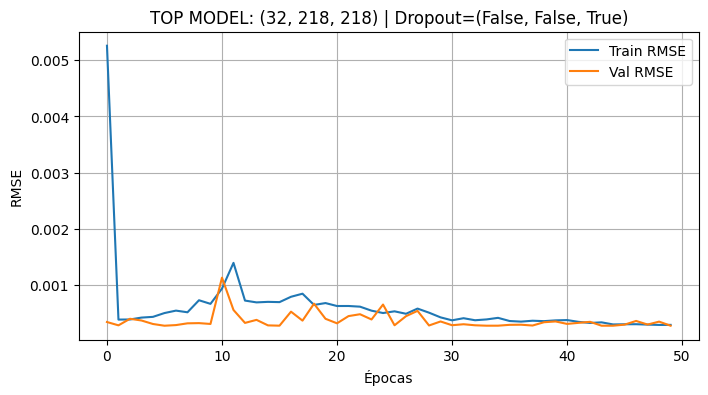
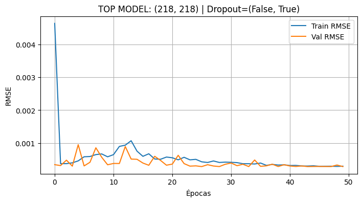
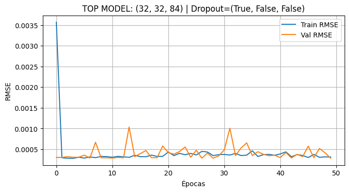
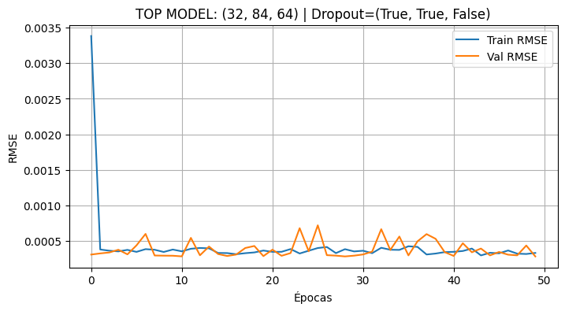
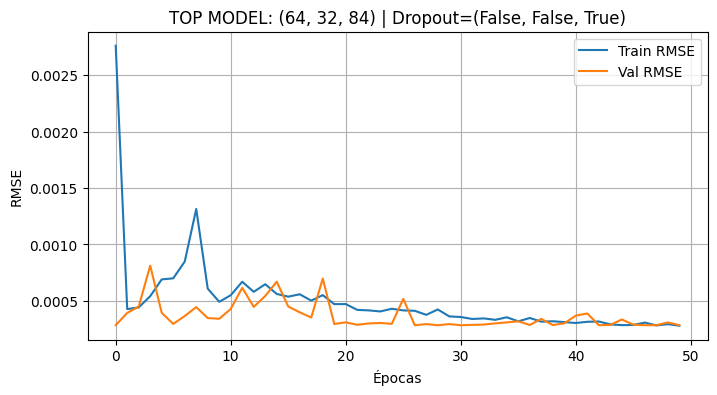